ВЕДОМСТВЕННЫЕ СТРОИТЕЛЬНЫЕ НОРМЫ
ИНСТРУКЦИЯ
ПО ПРОЕКТИРОВАНИЮ
ЖЕСТКИХ ДОРОЖНЫХ ОДЕЖД
ВСН 197-91
МОСКВА 2000
Разработаны СоюздорНИИ при участии МАДИ, РосдорНИИ, ВЗИСИ, СибАДИ, ХАДИ, Гипротюменнефтегаза, ТюмИСИ, БелдорНИИ.
Исполнители: В.С. Орловский, П.И. Теляев, А.О. Салль, A.М. Шейнин, А.М. Симановский, В.П. Серов, В.А. Зельманович, Ю.Н. Высоцкий, И.В. Басурманова (СоюздорНИИ); Г.И. Глушков, А.Я. Тулаев, М.С. Коганзон, B.П. Носов, А.П. Степушин, С.В. Суханов, В.В. Плужников; Н.В. Эфендиева, В.К. Федулов (МАДИ); Л.Б. Каменецкий, С.В. Лапшин, О.Н. Нагаевская (РосдорНИИ); Ю.Р. Макачев (ВЗИСИ); А.А. Новиков (Союздорпроект); A.В. Смирнов, В.П. Никитин, В.П. Филимендиков, B.М. Сикаченко (СибАДИ); В.Г. Кравченко, А.К. Пономарев (ХАДИ); В.В. Табаков, В.Р. Мейер (Гипротюменнефтегаз); А.В. Линцер, Ю.Н. Богомолов (ТюмИСИ); В.П. Корюков (БелдорНИИ); И.Н. Пономарев.
Внесены СоюздорНИИ.
Подготовлены к утверждению СоюздорНИИ.
С введением в действие «Норм проектирования жестких дорожных одежд» ВСН 197-91 утрачивают силу ВСН 197-83.
|
Министерство СССР |
Ведомственные |
ВСН 197-91 |
|
Инструкция |
Минтрансстрой СССР |
|
|
Взамен |
1.1. Настоящие Нормы распространяются на проектирование жестких дорожных одежд автомобильных дорог СССР общего пользования, подъездных дорог к промышленным предприятиям, внутрихозяйственных сельских дорог различных категорий с покрытиями:
цементобетонными на различных видах основания;
асфальтобетонными на основаниях из бетона разной прочности;
сборными на различных видах основания.
1.2. В дорожных одеждах различают следующие конструктивные слои (рис. 1):
покрытие - верхняя часть одежды, воспринимающая усилия от колес автомобилей и подвергающаяся непосредственному воздействию атмосферных факторов;
основание - часть одежды, обеспечивающая совместно с покрытием перераспределение и снижение давления на нижележащие дополнительные слои или грунт земляного полотна;
дополнительные слои основания - слои между основанием и подстилающим грунтом. Дополнительные слои основания выполняют морозозащитную, дренирующую и теплоизолирующую функции.
Между покрытием и основанием при необходимости укладывают выравнивающий слой из обработанных вяжущими зернистых материалов, который в качестве конструктивного слоя одежды не рассматривается и в расчетах не учитывается.
|
Внесены Государственным |
Утверждены Министерством № АВ-156 от 19 авг. 1991 г. |
Срок введения в действие 1 января 1992 г. |
Рис. 1. Поперечные разрезы типовых дорожных одежд с цементобетонным покрытием для дорог I - IV категории:
1 - покрытие; 2 - основание; 3 - нижний слой основания; 4 - земляное полотно; 5 - выравнивающий слой; 6 - краевая укрепительная полоса; 7 - укрепленная часть обочины; 8 - неукрепленная часть обочины; 9 - откос
Дорожные одежды сооружают на земляном полотне, верхняя часть которого носит название рабочего слоя.
Кроме конструктивных слоев одежды, различают краевую укрепительную полосу, обочину, откосы.
1.3. Проектирование дорожных одежд с учетом свойств земляного полотна представляет собой единый процесс конструирования и расчета их на прочность, деформативность, морозоустойчивость и осушаемость, а также технико-экономического обоснования вариантов. Конструированию и расчету посвящены соответствующие разделы норм.
1.4. Основными положениями раздела конструирования надлежит пользоваться при назначении вида покрытия и его минимально необходимой толщины, швов сжатия и расширения в покрытии, их конструкции, предельных расстояний между швами; при выборе материалов для устройства слоев основания и назначении их минимальной толщины; при выборе материалов для устройства дополнительных слоев основания.
1.5. В расчетной части норм определяют расчетные и нормативные нагрузки, размеры основных конструктивных элементов (толщина и длина плит, толщина слоев основания, армирование плит и швов, необходимость устройства швов расширения и расстояние между ними) для различных видов покрытия, категорий дорог, для любых величин транспортных нагрузок и любых грунтовых и природно-климатических условий.
Расчетом определяют рациональные варианты конструкции по ряду показателей технико-экономического сравнения, а также конструкцию дренирующих и морозозащитных слоев.
Расчетный срок службы при определении конструкции дорожной одежды и расчетных параметров конструктивных слоев устанавливают не менее 25 лет или менее 25 лет, но с учетом работы в раннем возрасте на воздействие построечного транспорта.
Конструктивные параметры дорожной одежды, приведенные в главе 2, обеспечивают долговечность дорожной одежды по прочности конструкции более 25 лет.
2.1. Цель конструирования дорожной одежды - выбрать материалы, определить количество слоев и их размещение по глубине. При этом необходимо:
предусматривать максимальное использование местных строительных материалов;
стремиться к уменьшению количества слоев;
предусматривать проезд построечного транспорта по основанию;
обеспечивать соответствие конструкции дорожной одежды технологии ее строительства и наибольшую механизацию работ;
учитывать категорию дороги, состав транспортного потока, интенсивность движения, напряженное состояние и механизм деформирования отдельных слоев и конструктивных элементов;
устанавливать срок службы покрытия и всей дорожной одежды до капитального ремонта;
учитывать природно-климатические и гидрологические условия местности (включая возведение высоких насыпей); наличие скальных грунтов, болот и т.д.
2.2. Выравнивающий слой предназначен для устранения неровностей основания и обеспечения возможности перемещения плит покрытия при изменении температуры. Если неровности основания не превышают 1 см, то допускается не устраивать выравнивающий слой, а применять слой, прерывающий сцепление плит с основанием и служащий изолятором против высыхания бетона в раннем возрасте и появления в покрытии усадочных трещин.
Выравнивающие слои устраивают из укрепленного вяжущим песка. Если этот слой впитывает воду из бетонной смеси, то его закрывают изолирующим слоем или увлажняют, непосредственно перед укладкой бетонной смеси в покрытие.
2.3. В зависимости от категории дороги, вида бетоноукладочного оборудования, устойчивости верхней части земляного полотна и способности его накапливать пластические или неравномерные деформации основание устраивают из бетона низких марок по прочности (Bвtв1 - Bвtв1,2); из нерудных материалов и грунтов, укрепленных неорганическим вяжущим (марки Rc6 под покрытия при капитальном и Rc4 при облегченном типах дорожных одежд; из щебня, шлака или гравия либо из песка.
Толщину и вид основания определяют расчетом.
При низкой интенсивности автомобильного движения и при строительстве покрытий легкими бетоноукладочными машинами с боковой или центральной загрузкой основание может быть песчаным, выполняющим одновременно роль дренажного и морозозащитного слоя.
Для исключения образования в слое песчаного основания колей от автомобилей-самосвалов основание должно быть укреплено путем устройства слоя из щебня, шлака или гравия толщиной 10 - 12 см, причем только в местах пропуска автомобилей-самосвалов, подвозящих цементобетонную смесь.
Минимальная толщина основания из бетона низкой прочности - 14 см; из нерудных материалов, укрепленных неорганическими вяжущими, 16 см; из щебня, шлака или гравия - 15 см.
Толщина укрепленного вяжущими основания, по которым уже в раннем возрасте (на 3 - 6-е сутки после устройства) начинается движение гусеничных бетоноукладчиков, должна быть не менее 18 см, марка - Rс 7,5.
В ряде случаев возможен вариант устройства основания из щебня, укрепленного слоем цементопесчаного раствора толщиной 4 - 5 см, выполняющим одновременно роль выравнивающего слоя.
При бетонировании покрытия гусеничными бетоноукладчиками со скользящими формами ширина укрепленного основания должна быть шире покрытия на 0,80 - 1,05 м с каждой стороны (см. рис. 1).
Ширина укрепленного технологического слоя для подвоза бетонной смеси - 3,0 - 3,5 м.
В слое укрепленного вяжущими основания рекомендуется устраивать поперечные швы через каждые 20 - 30 м, смещенные относительно швов в покрытии не менее чем на 1 м, путем закладки в нижнюю часть основания деревянных брусков высотой 4 - 7 см.
Во избежание появления трещин в основании под поперечными швами покрытия основание не должно сращиваться с плитами покрытия, что достигается укладкой прерывающих материалов.
2.4. Дополнительный слой основания устраивают из дренирующих, не подверженных пучению материалов (песок, шлак, вывески, ракушечник и пр.).
Дополнительный слой основания должен иметь водослив - сплошные или прерывистые выходы дренирующего материала на откосы земляного полотна и нижнюю плоскость (поверхность земляного полотна) с поперечным уклоном. Для улучшения водоотвода можно применять геотекстиль в виде сплошного или прерывистого слоя. Для уменьшения подтока влага снизу можно предусматривать прерывающие прослойки из синтетических пленок.
При небольшой интенсивности движения дополнительный слой основания может одновременно выполнять роль основания и выравнивающего слоя.
Толщина дополнительного слоя основания определяется расчетом.
Дополнительный слой, выполняющий морозозащитную функцию, может быть заменен грунтом, обработанным (в смесителе) гидрофобизирующими материалами. При небольшой интенсивности движения он может работать и в качестве основания.
2.5. Краевые укрепленные полосы устраивают из цементо- или асфальтобетона на бетонном основании. Для дорог низких категорий (V - III - с) краевые полосы устраивают из щебня.
Ширина краевых полос на дорогах I - III категорий 75 см, более низких категорий - 50 см. Толщина краевых полос должна быть равна толщине покрытия.
Бетонные полосы разделяют поперечными швами, которые должны быть продолжением швов в покрытии. При устройстве бетонных покрытий со шпунтами на боковых гранях и при отсутствии штырей в поперечных швах бетонных покрытий в швах краевых полос ставят штыри - по одному-два стержня длиной 50 см и диаметром 16 - 18 мм по типу штырей в швах сжатия и расширения в покрытии (с обмазкой и с колпачками в швах расширения).
Бетонные краевые полосы пазами от покрытия не отделяются. При устройстве вместо краевых полос уширения шириной более 3 м последние отделяются от бетонного покрытия пазами с заполнением их по типу шва сжатия. Поперечные швы полос уширения по конструкции и по месту расположения должны совпадать с поперечными швами покрытия.
2.6. Толщина бетонных покрытий должна быть, как правило, одинаковой по всей ширине проезжей части. На шестиполосных покрытиях толщину крайних внешних полос допускается увеличивать на 2 см для обеспечения проезда тяжелых автомобилей. Бетонные покрытия могут быть однослойными или при наличии соответствующего технологического оборудования - двухслойными с толщиной верхнего слоя не менее 6 см. В нижнем слое двухслойного бетонного покрытия могут быть применены менее прочные и менее морозостойкие местные каменные материалы.
Толщину бетонных покрытий h определяют расчетом. При использовании для покрытия бетонов, указанных в обязательном приложении 1, классов для нормативной нагрузки 50 кН на колесо минимальную толщину покрытия принимают по табл. 1.
Таблица 1
|
Минимальная толщина, см, покрытия при интенсивности движения расчетной нагрузки, ед/сут, на полосу |
|||||
|
более 2000 |
1000 - 2000 |
500 - 1000 |
100 - 500 |
менее 100** |
|
|
Бетонное (мелкозернистый бетон, шлакобетон) |
22 |
20 |
18(16) |
18*(16) |
15* |
|
Из материалов, укрепленных органическими вяжущими |
22 |
20 |
18(16) |
18*(16) |
15* |
|
Из щебня, гравия, шлака |
- |
22 |
20(18) |
18*(16) |
16* |
|
Из песка, песчано-гравийной смеси |
- |
- |
20(18) |
18(16) |
16 |
______________
* Толщина основания в этих случаях может быть на 2 см меньше указанной в п. 2.3.
** Сооружаются при соответствующем технико-экономическом обосновании.
Примечания. 1. В скобках приведена толщина покрытия для облегченного типа дорожной одежды.
2. Если в поперечных швах штыри не применяются, толщину покрытия увеличивают на 2 см.
2.7. В покрытии устраивают продольные и поперечные швы (сжатия и расширения), делящие покрытие на плиты определенной длины и ширины. В конце рабочей смены или при длительных перерывах в бетонировании (более 2 - 4 ч) устраивают рабочие швы по типу швов сжатия и при необходимости швы расширения. Для предохранения покрытия от трещинообразования в раннем возрасте часть швов сжатия устраивают как контрольные и в первую очередь в свежеуложенном бетоне.
В швах предусматривают штыревые соединения. Пазы швов заполняют герметизирующим материалом.
Длину плит lсж (расстояние между поперечными швами сжатия) на укрепленном основании и на устойчивом земляном полотне принимают по расчету, но не более 25h, на земляном полотне с ожидаемыми неравномерными осадками (включая насыпи высотой более 3 м) - 22h, а в местах перехода из выемок в высокие насыпи, в местах примыкания к искусственным сооружениям и в покрытиях шириной 6 м и менее - 20h.
2.8. Продольные швы предусматривают при ширине покрытия более 23h.
Контрольные швы, по конструкции аналогичные швам сжатия, обеспечивающие температурно-усадочную трещиностойкость в раннем возрасте, устраивают через каждые 2 - 3 плиты.
2.9. При устройстве швов расширения руководствуются данными табл. 2. Ширину швов расширения (толщину прокладки) принимают равной 3 см.
Таблица 2
|
Толщина покрытия, см |
Расстояние между швами расширения, число плит, при температуре воздуха во время бетонирования, °С |
|||||
|
менее 5 |
5 - 10 |
10 - 15 |
15 - 20 |
более 20 |
||
|
.Менее 40 |
20 - 24 |
9 |
9 |
-* |
- |
- |
|
Менее 20 |
9 |
9 |
9 |
-* |
- |
|
|
Более 40 |
20 - 24 |
9 |
9 |
9 |
-* |
- |
|
Менее 20 |
9 |
9 |
9 |
9 |
- |
|
______________
* См. п. 2.11.
Примечание. При устройстве контрольных швов через две плиты швы расширения устраивают через 10 плит.
2.10. Для повышения продольной устойчивости, лучшей совместной работы плит, увеличения динамической устойчивости основания и повышения транспортно-эксплуатационных качеств рекомендуется поперечные швы устраивать наклонным в плане или в виде «елочки» с уклоном к перпендикуляру 1:10 (рис. 2). Количество штырей в продольном шве рассчитывают с учетом массы соседних плит без штырей в продольном шве.
2.11. Штыри в продольных и поперечных швах располагают в соответствии с рис. 3. Конструкции швов расширения и сжатия принимают по рис. 3 и 4.
Рис. 2. Варианты расположения швов сжатия в плане для повышения комфортности движения, для уменьшения уступов между плитами (а, б и в), ровности покрытия в жаркое время года (б и в)
При устройстве покрытий на цементогрунтовом основании толщиной не менее 18 см бетоноукладчиками со скользящими формами и допущении проектной организацией уступов между плитами в поперечных швах высотой 3 мм (см. расчет основания) допускается в поперечных швах штыри не применять. Толщину покрытия в этом случае увеличивают на 2 см, а швы расширения при температуре бетонирования более 10 °С допускается не устраивать.
Рис. 3. Расположение штырей в швах покрытий на цементогрунтовом (а), щебеночном и песчаном (б) основаниях:
1 - шов сжатия; 2 - шов расширения; 3 - продольный шов; 4 - установочные шпильки (Æ 5, t = 13 ÷ 16 см), приваренные к штырям; 5 - изоляция места сварки с помощью специальных колпачков ила полиэтиленовой пленки; 6 - заполнитель (при приварке к штырям продольного шва шпилек диаметром 5 - 10 мм (в торец) длина штырей может быть уменьшена до 50 см)
Для повышения продольной устойчивости рекомендуется в примыкающих к шву расширения швах сжатия, а также в швах сжатия для случаев, отмеченных в табл. 2 звездочкой, применять в нижней части деревянные прокладки треугольного сечения высотой 5 - 6 см.
Рис. 4. Конструкция шва расширения:
1 - прокладка из выдержанной в воде древесины; 2 - каркас для фиксации прокладки и штырей, свариваемых в кондукторе; 3 - штыри в битумной изоляции, привязываемые к каркасу; 4 - температурный компенсатор (колпачок), обеспечивающий смещение штыря в бетоне не менее чем на 2 см; 5 - заполнитель (герметик)
2.12. При устройстве швов сжатия и расширения не допускается отклонения перекосов и наклонов штырей и прокладок от проектного положения более чем на 3 см. При устройстве пазов швов сжатия и расширения в свежеуложенном бетоне радиус закругления кромок швов не должен превышать 8 мм. Длина зоны обмазки штырей в поперечных швах разжиженным битумам составляет 2/3 длины штырей, толщина обмазки не должна превышать 0,3 мм.
Температурные колпачки, надеваемые на штыри швов расширения, должны обеспечивать свободное смещение штыря в бетоне не менее чем на 2 см.
Штыри в продольных швах устанавливают без битумной обмазки, с допущением перекосов не более чем на 5 см.
2.13. Паз швов сжатия может быть в сечении прямоугольным, ступенчатым или с наклонными стенками. Ширина паза швов сжатия может быть от 4 до 15 мм, глубина паза - не менее 0,25h.
Ширина паза над швом расширения принимается равной 33 - 35 мм, глубина до верха доски - 40 - 60 мм.
Расстояние между верхней частью доски шва расширения, снимаемой после бетонирования, и поверхностью сооружаемого покрытия должна быть не менее 10 мм.
Перед мостами и путепроводами устраивают не менее трех швов расширения без штырей и прокладок, шириной по 6 см каждый, через 15 - 30 м друг от друга. Швы заполняют сильно сжимаемым материалом, например песком, обработанным битумом; вверху шва устанавливают готовую резиновую пустотелую или пористую прокладку высотой 6 см.
2.14. Армирование плит по индивидуальным проектам применяется как вариант при тяжелых нагрузках, при слабых основаниях и при отклонениях в качестве бетона. Для армирования следует применять арматуру периодического профиля диаметром 8 - 16 мм класса А-П в виде отдельных продольных стержней, длина которых меньше длины плиты на 100 - 200 см, или в виде плоских сеток той же длины с продольной арматурой, со средним расходом ее 2,3 - 3,4 кг на 1 м2 покрытия.
При армировании краев покрытия в нижней зоне (на высоте 40 мм от нижней плоскости) двумя стержнями (диаметром 10 - 12 мм, А-П) или высокопрочной проволокой (2 Æ 5, Вр-П или 3 Æ 4, Вр-П) стержни должны быть короче длины плит на 100 см, проволока может проходить через поперечные швы сжатия насквозь.
2.15. Асфальтобетонные покрытия на цементобетонном основании могут быть одно-, двух- и трехслойными. Толщина слоя асфальто- и цементобетона определяется расчетом, но не должна быть менее значений, указанных в табл. 3.
Таблица 3
|
Предел прочности бетона на растяжение при изгибе, кгс/см2 (МПа) |
Толщина, см, асфальтобетона hа (цементобетона) при интенсивности расчетной нагрузки, авт./сут. |
||||
|
более 2000 |
1000 - 2000 |
500 - 1000 |
100 - 500 |
||
|
Ввtв 1,5 |
20(2,0) |
18,0 22 |
17,0 21 |
17,0 20 |
16,0 19 |
|
Ввtв 1,75 |
25(2,5) |
18,0 19 |
18,0 18 |
18,0 17 |
16,0 17 |
|
Ввtв 2,4 |
30(3,0) |
17,0 18 |
16,5 17 |
16,5 16 |
16,0 16 |
|
Ввtв 2,8 |
35(3,5) |
16,5 17 |
16,0 17 |
16,0 16 |
14,0 16 |
Примечания. 1. Значение толщины приведены для суточных колебаний температуры на поверхности асфальтобетона (цементобетона) Ап = 15 °С.
2. При других суточных колебаниях температуры толщина слоя
асфальтобетона определяется по формуле h'д
= hаАп/15, цементобетона
- по формуле 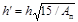
3. Значения ожидаемого суточного перепада Ап приведены в обязательном приложении 2.
4. При устройстве трещинопрерывающих слоев толщину асфальтобетонного слоя уменьшают на 30 %.
Допускается применять в основании укатываемый бетон (тощий, перпакт-бетон) с обеспечением максимального срока службы основания в качестве покрытия.
2.16. В слое цементобетона поперечные швы устраивают как контрольные, без армирования, через 15 м. Перед мостами и у пересечения дорог устраивают не менее трех шагов расширения через 10 - 20 м, так же как и при сооружении монолитных цементобетонных покрытий.
2.17. Для повышения трещиностойкости асфальтобетонного покрытия над поперечными швами в основании рекомендуется армировать асфальтобетон над швами сетками, располагая их симметрично вдоль шва; ширина сеток 80 - 160 см.
Сетки из стали, стекловолокна или стеклопластика размещают в слое асфальтобетона не ближе 8 см от поверхности покрытия.
2.18. Продольные швы в основании устраивают при ширине покрытия более 9 м и на участках с ожидаемыми неравномерными осадками земляного полотна. Продольные швы не армируются.
Ширина слоя цементобетона принимается такой же, как и при строительстве цементобетонных покрытий.
2.19. Кроме асфальтобетона, в качестве верхнего слоя могут применяться сборные плиты толщиной 6 - 8 см, поверхностная обработка, черный щебень, шлам. Для повышения сцепления верхнего слоя с цементобетонным поверхность последнего должна быть повышенной шероховатости и обработана грунтовкой. Грунтовку наносят на чистую и сухую поверхность цементобетона.
2.20. Для дорог с интенсивностью движения расчетной нагрузки менее 100 ед./сут могут применяться колейные покрытия в виде полос бетона, в том числе имеющих слои износа. Толщина колейного покрытия определяется расчетом. Рекомендуемые минимальные толщины приведены в табл. 4.
Таблица 4
|
Толщина колейного покрытия, см, при проектном классе бетона |
||||
|
В15* |
В20 |
B25 |
В30 |
|
|
Песчаное |
20 |
19 |
18 |
17 |
|
Цементогрунтовое, шлаковое, щебеночное толщиной 14 см |
18 |
17 |
16 |
16 |
______________
* В том числе из тощего бетона или щебня, пропитанного и закатанного цементным раствором.
Примечание. При классе бетона В15 - В20 поперечные швы не устраняют, при классе бетона В25 - В30 длина плит составляет 22h.
Поперечные швы в колейных покрытиях устраивают со смещением 30 - 50 см. На песчаном основании в швах ставят штыри - по два стержня диаметром 16 мм длиной 40 см на колею.
2.21. Дорожные одежды со сборными покрытиями целесообразны на дорогах в северных и труднодоступных районах, в том числе на дорогах нефтяных и газовых промыслов, а также на дорогах промышленных предприятий и сельскохозяйственного назначения.
2.22. Проектирование дорожных одежд со сборным покрытием следует производить, как правило, исходя из применения выпускаемых типовых плит, учитывая особенности работы покрытия путем расчета и конструирования основания.
Типовые плиты проектируют с учетом возможности их изготовления на одном и том же оборудовании для возможно большего количества сходных расчетных случаев, а в некоторых вариантах и с обеспечением возможности успешной работы при отклонениях от расчетной жесткости основания в меньшую сторону. Типовые плиты проектируют после их опытно-производственной проверки, элементы типовых плит (стыки, надрезы) - после экспериментально-опытной проверки с учетом особенностей технологии изготовления плит и их элементов.
Разработку и применение новых конструкций плит производят с учетом опыта эксплуатации аналогичных конструкций, при соответствующем технико-экономическом обосновании.
2.23. Минимальные размеры плит в плане определяют из условия обеспечения устойчивости работы основания под торцами плит, с учетом или без учета работы стыковых соединений, максимальные размеры из условия работы плит на монтажные нагрузки.
Плиты могут работать в покрытии, в основании, под защитным слоем какого-либо вида или выполнять функции защитного слоя основания повышенной жесткости и прочности, но недостаточной износо- или морозостойкости.
2.24. При строительстве нефтепромысловых и промышленных дорог с интенсивностью движения более 1000 авт./сут целесообразно применять предварительно-напряженные плиты длиной 5 - 6 м и шириной 1,75 - 2,30 м; при меньшей интенсивности движения - ненапряженные сочлененные плиты длиной 4,5 - 5,5 м и шириной 1,75 - 2,30 м.
Рис. 5. Стыковые соединения для предварительно-напряженных плит:
а - соединение из свариваемых скоб с прочностью стыков 20 кН; б - то же, с увеличением сечения сварного шва, 40 кН; в - из скоб, соединяемых двумя промежуточными шпунтовыми элементами с омоноличиванием раствором, 70 кН; г - несвариваемое из трех скоб, 70 кН; д - из скобы и паза в бетоне соседней плиты, 60 - 70 кН; е - из свариваемых пластин, имеющих анкерные стержни, 130 кН при податливости 2 мм
Для внутрихозяйственных и вспомогательных дорог применимы как предварительно-напряженные, так и ненапряженные сочлененные плиты. При этом учитывается, что напряженные плиты могут изготовляться без пропаривания, снижающего морозостойкость бетона, и без металлоемкого оборудования. При работе плит на слабом основании сочлененные плиты армируют двухслойной арматурой.
Плиты могут быть ребристыми, ячеистыми, двухслойными или многослойными.
2.25. На боковых поперечных гранях плит предусматривают стыковые соединения, конструкция которых зависит от величины колесной нагрузки, вида основания и конструкции формы или опалубки. Некоторые из конструкций стыковых соединений для предварительно-напряженных плит показаны на рис. 5, для ненапряженных плит - на рис. 6.
На боковых продольных гранях плит предусматривают монтажно-стыковые устройства в виде горизонтальных или вертикальных скоб.
Рис. 6. Варианты стыковых соединений для ненапряженных плит:
а, б - на углах плит, изготавливаемых в матричных формах (с неоткидными бортами); в, г, д - на боковых гранях плит, изготавливаемых в формах с неоткидными бортами
2.26. Для повышения долговечности сборного покрытия на поворотах, в местах примыкания или уширения целесообразно применять «доборные» плиты или плиты-вставки. Эти плиты изготавливают в тех же формах, что и плиты основного размера. Часть монтажных скоб может быть установлена на поверхности этих плит или на их боковых гранях, примыкающих к бортам формы. Монтажные и стыковые устройства при этом сохраняются.
2.27. Основания под сборные покрытия могут устраиваться различных типов (рис. 7). Конструкция основания определяется по расчету.
Швы в покрытии можно заполнять в нижней части или на всю высоту раствором, в верхней части - мастикой. Для большей сохранности кромок плит, работающих на первой стадии при двухстадийном строительстве, швы на первой стадии должны быть заполнены песком.
Рис. 7. Виды оснований под сборное покрытие:
1 - песчаное; 2 - то же, со слоем геотекстиля (СНМ); 3 - песчаное, в том числе с СНМ, с прокладками под углами и торцами плит; 4 - цементогрунтовое; 5 - песчаное с продольными полосами из цементогрунта или сухой цементопесчаной смеси; 6 - из сухой цементопесчаной смеси; 7 - из шлака или шлама; 8 - из нефтегрунта, нефтецементогрунта или грунта с добавкой отработанных буровых растворов; 9 - из сборных, в том числе некондиционных плит
3.1. Дорожные одежды рассчитывают с учетом состава транспортного потока перспективной интенсивности движения к концу срока службы, грунтовых и природно-климатических условий.
Расчет производят в следующих случаях:
при проектировании дорожных одежд;
при определении возможности разового пропуска тяжелых нагрузок по существующему покрытию;
при определении рациональности новых конструктивных или технологических решений.
Расчет выполняют по предельным состояниям, определяющим потерю работоспособности того или иного элемента конструкции, на основании расчетных схем, используя нормируемые расчетные параметры.
3.2. Расчет ведется путем проверок предварительно назначенной конструкции дорожной одежды:
по прочности верхних слоев дорожной одежды;
по прочности и устойчивости земляного полотна и слоев основания на сдвиг и по накоплению уступов и поперечных швах покрытия;
по устойчивости и продольном направлении покрытия в жаркое время года, по прочности стыковых и монтажных соединений;
по устойчивости дорожной одежды к воздействию морозного пучения;
по способности дренирующего слоя основания отводить влагу в весенний период.
Расчетом определяются толщины покрытия и слоев основания, расстояние между поперечными швами, количество штырей в швах расширения и сжатия.
3.3. Исходные данные для расчета дорожной одежды включают:
параметры дороги (категория, ширина проезжей части, срок службы дорожной одежды до капитального ремонта);
параметры движения (интенсивность, нагрузка);
параметры земляного полотна и условия его работы (тип местности, разновидности грунтов, уровень грунтовых вод);
дорожно-климатическую зону.
3.4. Жесткие дорожные одежды рассчитывают с учетом надежности (вероятности безотказной работы конструкции в течение намеченного срока эксплуатации), принимаемой в соответствии с табл. 5.
Таблица 5
|
Уровень надежности |
Коэффициент прочности Кпр |
|
|
Более 1000 |
0,95 |
1,00 |
|
500 - 1000 |
0,90 |
0,94 |
|
Менее 500 |
0,80 |
0,87 |
3.5. Покрытие рассчитывают на воздействие расчетной колесной нагрузки Р, которая определяется умножением нормативной нагрузки на опору (колесо) Рк на коэффициент динамичности тд:
Р = Рк × тд, (1)
а для промышленных дорог, где наблюдаются регулярные перегрузки автотранспорта, с дополнительным учетом коэффициента перегрузки mпг:
Р = Рк × тд × тпг. (2)
Для дорог общей сети Рк = 50 кН, mд = 1,3. Для промышленных дорог Рк определяется на основе ожидаемого состава транспортных средств, но не менее 50 кН, в период расчетного состояния земляного полотна. Более высокая нагрузка принимается в расчет, если она превышает нормативную на 20 % при интенсивности более 5 % общей перспективной интенсивности.
Для дорог с интенсивностью движения расчетной нагрузки 500 ед/сут и менее величина Рк принимается на основе ожидаемого состава транспортного потока, но не менее нагрузки на колесо от воздействия построечного транспорта и дорожно-строительных машин (кранов, трейлеров и пр.).
Для нефтепромысловых дорог со сборным покрытием mд = 1,25 и mпг = 1,25.
3.6. Все полосы проезжей части и боковые укрепленные волосы проектируют на одну и ту же нагрузку. Исключением являются полосы дорог с ограничениями по условиям движения по направлениям (дороги карьеров, подъездов к промышленным и строительным объектам).
3.7. Расчетная повторность нагружения Npt определяется по формуле
где Nпр - число проходов автомобилей с приведенной нагрузкой на расчетной полосе движения в первый год эксплуатации;
fпол - коэффициент, учитывающий число полос движения и распределение транспортного потока по ним (табл. 6); для боковых укрепительных полос fпол = 0,01;
К1 - коэффициент приведения автомобиля с нагрузкой P1 к нормативной Рк (рис. 8);
Рис. 8. График для определения К1 в зависимости от Рp; --- --- --- с учетом трехосных автомобилей
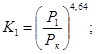
N1 - число проходов автомобилей с нагрузкой (весом) P1; nc - количество дней в году с положительной температурой воздуха; q - знаменатель геометрической прогрессии, описывающей ежегодный прирост интенсивности движения; T - срок службы покрытия до капремонта (см. п. 1.6):
Таблица 6
|
Значения fпол для полосы, считая справа по направлению движения |
|||
|
1-й |
2-й |
3-й |
|
|
1 |
1,00 |
- |
- |
|
2 |
0,55 |
- |
- |
|
3 |
0,50 |
0,50 |
- |
|
4 |
0,35 |
0,20 |
- |
|
6 |
0,30 |
0,20 |
0,01 |
3.8. Если на стадии проектирования известны только срок службы Т, категория дороги и соответствующая ей общая суточная интенсивность движения Nc на полосу, достигаемая к сроку Т, и постоянная в течение этого срока, а также дорожно-климатическая зона, то расчетная повторность нагружения определяется по формуле
Npt = TKN × Nc × nc, (6)
где KN - коэффициент перехода от общей интенсивности к интенсивности расчетной нагрузки (автомобиля); для дорог общей сети KN = 0,25, для промышленных, нефтепромысловых и внутрипромысловых (сельских) дорог KN = 0,40.
Бели исходными являются общие интенсивности движения по полосе к началу (Ncн) и концу (Nск) срока эксплуатации покрытия, то расчетная повторность нагружения определяется следующим образом:
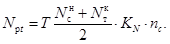
3.9. Расчет проводят путем проверки прочности покрытия по формуле
где Кпр - коэффициент прочности, определяемой в зависимости от категории дороги по табл. 7;
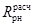
Напряжения растяжения при изгибе определяют по одной из двух расчетных схем, учитывающих условия контакта плиты с основанием и место расположения нагрузки.
Первая расчетная схема применяется для определения толщины покрытия при условии гарантированной устойчивости земляного полотна и отсутствия неравномерных осадок или выпучивания; характеризуется наличием полного контакта плит с основанием под всей площадью плиты. Расчетное место приложения нагрузки в дорожном покрытии - продольный внешний край в центре по длине плиты.
Вторая расчетная схема применяется для определения расстояния между поперечными швами, а также толщины плит в особых условиях для дорог низких категорий при заданной их длине на участках с ожидаемыми неравномерными осадками или неравномерным пучением земляного полотна.
3.10. По первой расчетной схеме напряжения σрt (МПа) определяются, исходя из решений теории упругости, по следующей аппроксимирующей зависимости, отражающей наличие контакта плиты с основанием:
где Р - расчетная нагрузка, кН; Км - коэффициент, учитывающий влияние места расположения нагрузки; для неармированных покрытий Км = 1,5; для покрытий с краевым армированием или площадок с расположением полос наката не ближе чем 0,8 ширины внешнего продольного края покрытия - Км = 1,0 для продольного направления и Км = 1,5 для поперечного; Кусл - коэффициент, учитывающий условия работы; Кусл = 0,66; Кшт - коэффициент, учитывающий влияние штыревых соединений на условия контактирования плит с основанием, при наличии в поперечных швах штырей Кшт = 1, при отсутствии штырей Кшт = 1,05; h - толщина плиты; Kt - коэффициент, учитывающий влияние температурного коробления плит, определяемый по табл. 7;
Таблица 7
|
зона |
Значения Кt, при толщине плиты, см |
||||||||||
|
16 |
17 |
18 |
19 |
20 |
21 |
22 |
23 |
24 |
25 |
26 |
|
|
II |
0,95 |
0,93 |
0,90 |
0,87 |
0,85 |
0,83 |
0,80 |
0,77 |
0,73 |
0,70 |
0,67 |
|
III |
0,95 |
0,93 |
0,90 |
0,87 |
0,84 |
0,92 |
0,79 |
0,76 |
0,72 |
0,69 |
0,66 |
|
IV |
0,94 |
0,92 |
0,89 |
0,86 |
0,84 |
0,82 |
0,78 |
0,75 |
0,71 |
0,68 |
0,65 |
|
V |
0,94 |
0,92 |
0,89 |
0,85 |
0,83 |
0,81 |
0,77 |
0,74 |
0,70 |
0,66 |
0,63 |
R - радиус отпечатка колеса;
qш - давление в шинах, принимаемое равным 0,6 МПа; lу - упругая характеристика плиты, см;
Е и μ - модуль упругости и коэффициент Пуассона бетона, определяемые по обязательному приложению 2; μ0 - коэффициент Пуассона основания; E0э - эквивалентный модуль упругости основания; модуль упругости материалов основания определяются по обязательным приложениям 1 и 2.
3.11. При второй расчетной схеме при опирании на основание в ее центральной части по длине полудлина плиты А (см) определяется по формуле
а толщина плиты h (см) на основе формул (8) и (12)
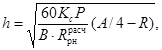
где Р в кН, А, А и В в см; В - полуширина плиты см; А > В; Кс - коэффициент скорости потери ровности основания при ожидаемой общей просадке основания (земляного полотна) более 15 см Кс = 1,2, в остальных случаях - Кс = 1.
3.12. Необходимость
устройства швов расширения определяется исходя из допустимых температурных
напряжений сжатия 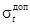
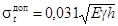
или
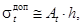
где γ - плотность материала плиты, т/м3; h - толщина плиты, м; Аt = 19 МПа/м.
Из условия сохранения прочности бетона в зоне швов не должно превышать 2Bвtв.
3.13. Из
условия прочности швы расширения устраивают, если допустимые напряжения будут меньше
фактических 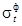
= сЕ × (Тмакс и Тисх), (16)
где с - коэффициент линейной температурной деформации бетона, 1/°С; с = 0,00001 1/°С; Тмакс, Тисх - максимальная и исходная температура бетона в середине по толщине плиты, °С (см. табл. П. 2.12 обязательного приложения 2).
3.14. Расстояние Lpаcш (м) между швами расширения определяется по формуле
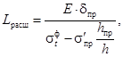
где δпр - деформация сжатия прокладки шва расширения, м;
δпр = Впр × σпр/Епр; (18)
Впр - ширина прокладки, м; Епр - модуль упругости прокладки, МПа; для деревянных прокладок Епр = 8 МПа; σ'пр - обжатие шва расширения (напряжение при сжатии) МПа; для деревянных прокладок мягких пород σ'пр = 2 МПа; hпр - высота прокладки, м.
hпр = h - 0,04 (м). (19)
3.15. Диаметр dшт (см) штырей в швах вычисляют по формуле
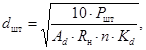
где Ршт - часть расчетной нагрузки на колесо, воспринимаемой штыревым соединением;
ωшт - податливость штырей при нагружении, мм; для швов сжатия ωшт = 1,5 мм, для швов расширения - ωшт = 2 мм; ωпл - расчетный прогиб края плиты от действия нагрузки, мм; для песчаного и щебеночного основания ωпл = 5 мм, для цементогрунтового основания - ωпл = 3 мм; Аd - коэффициент длины зоны обжатия бетона в месте входа в него штыря; для швов сжатия Ad = 3, для швов расширения Ad = 1,5; Rн - средняя прочность бетона на сжатие, МПа: допускается принимать Rн = 8Bвtв; п - количество штырей на полосе наката или на длине lу; Кd - коэффициент запаса, равный 0,75.
3.16. Длина штырей составляет 20d плюс допуск, равный 5 см, плюс прибавка на установку температурного колпачка (5 см) и на ширину шва (3 см для швов расширения).
Диаметр штырей в продольных швах определяется из требуемой площади поперечного сечения Fa (см2/м) арматуры:
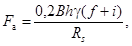
где f - коэффициент трения - сцепления плиты с основанием; принимается f = 1,5, i - поперечный уклон, доли единицы; i = 0,05; Rs - расчетное сопротивление арматуры по СНиП 2.03.01-84; кгс/см2; В, h в см; v в т/м3.
Длина гладких штырей в продольных швах равна 40dшт + 5 см, из стержней периодического профиля - 35dшт + 5 см, при диаметре шпилек для крепления штырей 8 - 10 мм и при надежной приварке их к штырям - 22dшт + 5 см.
3.17. Толщину верхнего слоя покрытия определяют из условия работы на прочность при действии расчетной нагрузки по формуле, отражающей растяжение асфальтобетона в поперечном направлении в призме шириной поверху 2R, понизу (2R + 2hа) и высотой hа:
где rd - сопротивление асфальтобетона на растяжение при изгибе (см. обязательное приложение 2); Кya - коэффициент усталости (учитывающий многократное приложение нагрузки в течение суток) (см. обязательное приложение 2); μа - коэффициент Пуассона для асфальтобетона; Са - сцепление между слоем асфальтобетона и цементобетона, не превышающее сцепление внутри слоя асфальтобетона (допускаемое напряжение по сдвигу). При отсутствии гарантированного сцепления принимается Са = 0.
3.18. Толщину нижнего слоя покрытия рассчитывают из условия прочности:
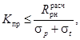
где σр - вычисляется по формуле (9) при Kt = 1, при Км, определяемом исходя из условий эксплуатации и пояснений к этому коэффициенту (см. п. 3.10).
Толщина слоя при этом определяется в зависимости от величины сцепления между слоями асфальто- и цементобетона.
При гарантированном надежном во времени сцеплении учитывается совместная работа слоев на изгиб, при которой расчетная или эквивалентная толщина слоя
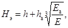
где h - толщина нижнего слоя из цементобетона; hа - толщина верхнего слоя из асфальтобетона; Eа - расчетный модуль упругости асфальтобетона (см. обязательное приложение 2).
Если сцепление верхнего слоя с нижним или работа верхнего слоя на изгиб не гарантируется, то расчетную толщину принимают равной толщине нижнего слоя из цементобетона h, но при этом радиус отпечатка колеса увеличивается на толщину верхнего слоя.
При работе нижнего слоя без верхнего в течение более 2 мес. расчет ведут как для однослойного покрытия с учетом повторности нагружения в течение срока службы без верхнего слоя.
Длину плит назначают равной 15 м, продольный шов предусматривают при ширине покрытия 9 м и более. Все швы устраивают без штырей.
3.19. Напряжение σt от перепада температур по толщине нижнего слоя определяют по формуле
где
Aп - перепад температуры в течение суток на поверхности асфальтобетонного покрытия, °С, определяемый в зависимости от района строительства по обязательному приложению 2; ω - угловая частота суточных колебаний температуры, рад/ч, ω = 0,26 рад/ч, аta, atб - коэффициенты температуропроводности соответственно асфальтобетона и цементобетона; аta = 0,002 м2/ч; atб = 0,004 м2/ч.
3.20. Расчет колейных покрытий ведется так же, как и цементобетонных. Изгибающий момент в колейных покрытиях определяют с учетом ширины колей, используя существующие методы расчета балок на упругом и упругопластическом основании, учитывая перераспределение реакций отпора основания за счет его пластических деформаций под торцами плит и приложение нагрузки через штамп (см. ниже расчет сборных покрытий из плит).
3.21. Расчет сборных покрытий из плит ведется на действие колесных и монтажных нагрузок. Неравномерное опирание плит на основание при укладке их на неровное и слабое основание, при температурном короблении плит или при неравномерном морозном выпучивании основания учитывают путем умножения нагрузки Р на коэффициент К, который принимается для предварительно-напряженных несочлененных плит длиной до 6 м или для элементов сочлененных плит длиной не более 2 м равным 1,1, для железобетонных плит длиной более 2 м - по расчету при неполном опирании плит на основание.
3.22. Расчет толщины плит и количества арматуры выполняют исходя из следующих условий:
а) для бетонных плит и элементов сочлененных плит - из условия прочности бетона на изгиб краевых участков плит:
где W
- момент сопротивления плиты; 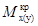
б) для бетонных плит и элементов с краевым армированием, выдерживающих до появления трещин усилие 0,25 за счет арматуры на краевых участках плит шириной 2h - из условия прочности бетона в центре плит или элементов:
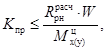
где 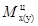
в) для слабоармированных плит или плит с вероятностью образования одиночных трещин и для мест надрезов в сочлененных плитах - дополнительно из условия прочности сечения с узкой трещиной на действие изгибающего момента от монтажных нагрузок:
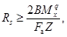
где 2В - ширина плиты; fa - поперечное сечение арматуры в нижней зоне на ширине 2В; Мхq - изгибающий момент от действия монтажной нагрузки; Z - плечо внутренней пары сил, определяется по СНиП 2.03.01-84.
При работе плит на ровных основаниях, не дающих неравномерных осадок, расчет проводят из условия ограничения раскрытия трещин сверх пределов, указанных в СНиП 2.03.01-84, но не более 0,3 мм, а при работе на неустойчивых или неровных основаниях из условия работы арматуры в трещине или надрезе в качестве штыревого соединения;
г) для железобетонных плит с вероятным частым расположением узких трещин - из условия прочности армированных сечений без учета работы бетона на растяжение при действии изгибающего момента от колесной или монтажной нагрузки. При действии колесной нагрузки учитывается снижение жесткости плиты в продольном и поперечном направлениях за счет раскрытия трещин (то СНиП 2.03.01-84) или уменьшения расчетного модуля упругости сечения до уровня Е", определяемого по формуле
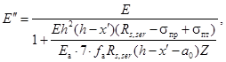
где Е и Еa - модули упругости соответственно бетона и арматуры; Rs,ser - напряжения в арматуре после раскрытия трещин (табл. 20, СНиП 2.03.01-84); σпр - предварительное напряжение в арматуре; σпт - потери предварительного напряжения в арматуре; fa - площадь поперечного сечения арматуры; х' - высота сжатой зоны бетона; а0 - толщина защитного слоя растянутой арматуры (до оси арматуры);
д) для предварительно-напряженных плит или сечений на действие монтажных нагрузок:
по прочности напряженного бетона на растяжение при изгибе с одновременной работой на изгиб напряженной арматуры (1-я стадия) и по прочности на изгиб с появлением узких трещин (2-я стадия) по СНиП 2.03.01-84.
При действии колесных нагрузок дополнительно расчет ведут исходя из условия работы арматуры в узких трещинах в качестве штырей (3-я стадия).
3.23. Изгибающие моменты определяют при приложении нагрузки в центре, на краю, на углу и на торце, в продольном и поперечном направлениях.
Расчетную длину (Lxц) и ширину (Lyц) эпюр отпора основания определяют по формулам в случае приложения нагрузки:
в центральной части плиты
Lxц = 2,5lух + а; (32)
Lуц = 2,5lуу + в; (33)
на торце и на углу с обратным выгибом
Lxт = 0,7Lxц; Lут = 0,7Lyц, (34)
где а и в - полудлина и полуширина отпечатка колеса, отнесенных к нейтральной линии плиты.
Для двухколесной опоры с расстоянием между отпечатками колес в'
а = 0,87R + 0,5h; (35)
в = 1,15R + 0,5h + 0,5в'.
Величины Lxц, Lуц, Lxт и Lут ограничиваются размерами плит:
причем Lxц, Lуц £ A; Lxт £ B; Lут ³ 2B (рис. 9).
При определении lуx принимается во внимание модуль упругости Eоэ (см. формулу (11) бетона или плиты в продольном направлении, при определении lуу - в поперечном направлении. Значение Eоэ определяется при Д = 50 см.
На первой стадии при двухстадийном строительстве модуль упругости Eоэ земляного полотна принимается равным 0,37 табличного значения модуля упругости (песка или супеси) или численно равен табличному значению модуль деформации.
Изгибающий момент определяют по формулам:
а) в центре плиты:
в продольном направлении
Рис. 9. Расчетные места приложения нагрузки и расчетные точки определения изгибающих моментов в плитах сборных покрытий
в поперечном (для плит шириной не более 2,2 м)
где Gа и Gв - коэффициенты влияния размеров штампа;
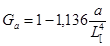 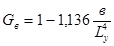
б) на краю плиты:
продольном
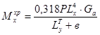
поперечном
в) на поперечном торце плиты в продольном направлении:
г) на углу плиты в продольном направлении:
Коэффициент, учитывающий влияние соседней оси Ка, удаленной от первой оси на расстояние а1, для центральных частей плит в продольном направлении определяется по формуле
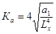
За счет того, что при центральном нагружении краевые участки плит при пластических деформациях основания недогружены, продольный изгибающий момент в центре плиты уменьшается до величины, определяемой по формуле
а поперечный изгибающий момент - до величины
. (45)
При расчете ненапряженных плит длиной более 2 м, укладываемых на неровное основание, изгибающий момент при нагружении на торце и углу плиты определяется по формулам (41) и (42), а в центре плиты - по формулам (36) и (37), причем при В > 100 см вместо Р принимается 2Р.
3.24. Изгибающий момент Mqх от монтажных нагрузок определяется по формуле
где l - расстояние между монтажными скобами на длинной стороне плиты; а1 - расстояние от монтажных скоб до торцов плиты; - плотность бетона; Kq - коэффициент динамичности (коэффициент прихватывания плиты к форме); для плит длиной 3,5 м и менее Kq = 1,5; для плит длиной более 3,5 м Kq = 2,0.
3.25. Количество арматуры в железобетонных и предварительно-напряженных плитах определяется исходя из изгибающих моментов, вычисленных по СНиП 2.03.01-84.
При пропаривании плит для повышения их трещиностойкости необходимо на краях располагать дополнительную арматуру диаметром 8 - 10 мм по одному стержню в верхней и нижней зонах, а в зонах заанкерования предварительно-напряженных стержней - дополнительно к расчету по два стержня диаметром 8 ¸ 10 мм.
При интенсивности движения до 1000 авт./сут количество арматуры определяется исходя из того, что на расстоянии Lтх от поперечных краев возможно появление поперечных трещин, которые существенно снижают изгибающий момент в плите в зоне трещин, а арматура должна работать в качестве штыревого соединения.
В данном случае площадь поперечного сечения арматуры Fа (см2 на длину трещины lтр)
где Rн - марочная прочность бетона (средняя прочность) на сжатие; lтр - длина трещины, принимаемая равной для края плиты 0,4Lуц, для центра - 0,8Lуц.
Толщину плиты при этом устанавливают исходя из выбранного заранее расстояния между трещинами λтр (при 2А = 2λтр). Толщина может колебаться от 8 до 16 см. Общий расход арматуры определяют также из условия работы плиты на монтажные нагрузки.
Расход арматуры в сочлененных плитах рассчитывают по колесной нагрузке с помощью формулы (47), а из действия монтажной нагрузки - исходя из формулы (46). Арматуру, рассчитанную на монтажные нагрузки, располагают в верхней и в нижней зонах.
3.26. Толщину бетонных плит определяют из формулы (28), плит с краевым армированием - (29).
3.27. Шпунтовые соединения типа «выступ-паз», которые целесообразно устраивать на поперечных гранях плит, должны быть шириной 0,25h и иметь плавные очертания. Высота гребня или глубина паза 1,9 - 2,5 см.
На продольных гранях можно устраивать сдвоенные или строенные пазы общей шириной 0,3h и глубиной 5 - 8 мм.
Прочность стыковых соединений должна быть не менее Ртр и определяется по формуле (21).
Фактическую прочность горизонтальной скобы (МПа) при длине в зоне заделки не менее 10d вычисляют по формуле
где d - диаметр арматуры скобы; Fп - площадь опирания полки скобы на бетон.
Прочность сварки скоб определяют по нормам расчета стальных конструкций на повторную нагрузку, исходя из площади поперечного сечения сварного шва.
Допустимое усилие на вертикальную скобу рассчитывают по прочности анкерной заделки скобы в бетон:
(49)
Допустимое усилие на горизонтальную монтажную скобу при подъеме плит определяют по формуле
(50)
Это усилие должно составлять не менее половины веса плиты.
3.28. Критерием устойчивости основания является устойчивость его по сдвигу и отсутствие недопустимых деформаций под торцами плит к концу расчетного срока службы. Для дорог I - III категорий величину предельно допустимых деформаций или высоту уступов между плитами в поперечных швах устанавливают равной 0,3 см.
Толщину дорожной одежды в целом определяют также из условия обеспечения отвода влаги из основания и из расчета на морозное пучение.
3.29. Устойчивость основания по сдвигу допускается оценивать по двум вариантам.
При расчете на формирование в результате накопления остаточных деформаций в основании к концу срока службы дорожной одежды уступов между плитами высотой не более 0,3 см устойчивость считают обеспеченной при условии qрасч ³ qдоп.
3.29.1. Расчетное давление qрасч (МПа) на основание при нагружении обоих углов плиты у поперечного шва (длина плиты более 15h) можно определить по формуле
где mст - коэффициент, учитывающий влияние стыкового соединения; если стык работает, то mст = 0,7, если нет, то mст = 1,0.
Значения Lxт и Lyт не должны превышать соответственно 2А и 2В. Если под плитой основание толщиной h0 укрепленное, то проверку на сдвиг проводят на глубине h0, a Lxт и Lyт увеличивают на 3h0; при этом Lут £ 2B + 4h0 и Lхт £ 2A + 2h0.
На подошве слоя песка толщиной hп значения Lxт и Lyт увеличивают на 0,7hп.
При применении подшовных подкладок Lxт £ 2А + 0,5lп, где lп - размер подшовной подкладки вдоль покрытия для поперечных швов и поперек покрытия для продольных швов и краев.
Расчетное давление qрасч (МПа) на основание составляет:
для плит длиной (8 ÷ 15h)
(54)
для плит длиной менее 8h
(55)
где Q - вес плиты, кН; Р в кН; А, В, а, в - в см.
3.29.2. Допустимое давление qдоп (МПа) на основание
где т - коэффициент, учитывающий условия работы; m = 1,3; Kн - коэффициент надежности; Кн = 1,1; A1, А2 и А3 - безразмерные коэффициенты, зависящие от угла внутреннего трения грунта, принимаемые по табл. 8; γгр - удельный вес грунта, тс/м3; hв.с - толщина выравнивающего слоя; С - удельное сцепление грунта основания (см. обязательное приложение 2), МПа; nj, пдн и nс - коэффициенты, учитывающие размеры площадки нагружения:
Lx(y), h, h0, hв.с принимаются в м;
Таблица 8
|
Безразмерные коэффициенты |
|||
|
А1 |
А2 |
А3 |
|
|
4 |
0,06 |
1,25 |
3,51 |
|
8 |
0,10 |
1,39 |
3,71 |
|
10 |
0,18 |
1,73 |
4,17 |
|
24 |
0,72 |
3,87 |
6,45 |
|
26 |
0,84 |
4,37 |
6,90 |
|
28 |
0,98 |
4,93 |
7,40 |
|
30 |
1,15 |
5,59 |
7,95 |
|
32 |
1,34 |
6,35 |
8,55 |
|
34 |
1,55 |
7,21 |
9,21 |
|
36 |
1,81 |
8,25 |
9,98 |
|
38 |
2,11 |
9,44 |
10,80 |
|
40 |
2,46 |
10,84 |
11,74 |
3.29.3. Высота накапливаемых уступов ωуст (см) между плитами
где Р в кН; Lyт в см; Е0 в МПа, Кд - коэффициент, учитывающий влияние виброползучести при динамическом нагружении подвижной колесной нагрузкой;
(59)
Kд0 - то же, для основания толщиной hо0 по табл. 9; hо - проектная, т.е. предварительно назначенная толщина слоя укрепленного основания; Кq - коэффициент, учитывающий влияние нагруженности основания по сдвигу;
Из формулы (58) получаем:
(61)
где ωдоп в см.
Величину h0 назначают предварительно, а затем для определения Lyт уточняют исходя из условия £ Е0. Е0 для назначенной толщины основания определяют как эквивалентный модуль упругости по обязательному приложению 2.
Подшовные подкладки, применяемые для укрепления песчаных оснований, должны выдерживать на песчаном основании на изгиб (при приложении нагрузки через полосу шириной 10 см, размещенную в центре подкладки) нагрузку, равную 0,5Р.
Подшовные подкладки следует располагать на такой высоте, чтобы после прикатки покрытия несколькими проходами крана по сборному покрытию подкладки находились заподлицо с поверхностью основания.
При использовании в основании некондиционных сборных плит вначале определяют их конструктивные и прочностные характеристики по тем группам, на которые они были предварительно рассортированы. Расчет этих плит проводится с учетом увеличения размеров (а и в) площадки нагружения на половину толщины верхнего асфальтобетонного слоя. При необходимости под плитами можно применять укрепленный нижний слой основания, толщина которого определяется расчетом.
Таблица 9
|
Толщина основания h0о, см |
Материал выравнивающего слоя |
Значение Кдо, когда стыки |
||
|
не работают |
работают |
|||
|
Песчаное |
- |
Песок |
5,7** |
1,6** |
|
- |
СНМ |
2 - 3*/** |
1,3** |
|
|
- |
Подшовные подкладки |
2 - 3* |
1,2 - 1,5* |
|
|
Песчано-гравийное |
20 |
Песок |
2,0 |
1,2 |
|
20 |
Цементопесчаная смесь |
1,2 |
1,0 |
|
|
Цементогрунтовое |
16 |
Песок |
1,5 |
1,1 |
|
16 |
Цементопесчаная смесь |
1,1 |
1,0 |
|
|
Нефтегрунтовое |
20 |
Нефтегрунт |
2,2 |
1,3 |
|
20 |
СНМ |
1,8 |
1,2 |
|
|
Нефтецементо-грунтовое |
20 |
Нефтегрунт |
1,2 |
1,1 |
|
Грунтовое с добавкой отработанных буровых растворов |
20 |
СНМ |
1,1 |
1,0 |
______________
* Меньшее значение - для более сухого грунта земляного полотна, уплотненного в летнее время.
** Для песчаных оснований из однозернистых (барханных) песков.
Значение Кдо при отсутствии стыков увеличивают в 1,3 раза, а при наличии - в 2 раза.
3.30. При расчете на работу конструкции в упругой стадии при заданном уровне надежности устойчивость основания считается обеспеченной при условии:
где Такт и Тдоп - активные и допустимые напряжения сдвига, определяемые по Инструкции по проектированию дорожных одежд нежесткого типа с учетом того, что в зоне швов покрытия расчетный модуль упругости Ерасч бетонного покрытия назначают по табл. 10;
Таблица 10
|
Ввtв 4,4 |
Ввtв 4,0 |
Ввtв 3,6 |
Ввtв 3,2 |
Ввtв 2,8 |
Ввtв 2,4 |
Ввtв 1,6 |
Ввtв 1,2 |
|
|
Ерасч, МПа |
1770 |
1600 |
1600 |
1520 |
1420 |
1310 |
930 |
780 |
Кпр - коэффициент прочности по табл. 5.
3.31. Расчет морозозащитных слоев основания проводят по Инструкции по проектированию дорожных одежд нежесткого типа, исходя из следующих допустимых величин общего приподнятая от выпучивания:
для цементобетонных покрытий при эксплуатации по первой расчетной схеме, для сборных покрытий из железобетонных ненапряженных плит длиной более 25h - 3 см;
для цементобетонных покрытий при эксплуатации по второй расчетной схеме, для сборных покрытий из железобетонных ненапряженных плит длиной менее 25h, из сочлененных и предварительно-напряженных плит:
при отсутствии в поперечных швах стыков - 4 см;
при их наличии - 6 см.
3.32. Толщину дренирующего слоя hф (м) определяют в общем случае по формуле
где Lф - длина участка фильтрации, равная половине ширины насыпи, м; Kф - коэффициент фильтрации дренирующего материала, м/сут.
При применении в основании нетканых синтетических материалов (геотекстиля) с Кф ³ 50 м/сут. толщину дренирующего слоя из песка уменьшают на 10 - 15 см, из песчано-гравийной смеси (ПГС) - на 7 - 10 см.
Меньшие значения уменьшения толщины дренирующего слоя принимают при использовании средне- и крупнозернистых песков и при содержании гравия в ПГС более 50 %, большие - при использовании мелкозернистых песков и при содержании гравия в ПГС менее 50 %.
НОРМАТИВНЫЕ И РАСЧЕТНЫЕ ХАРАКТЕРИСТИКИ ЦЕМЕНТОБЕТОНА
1. Нормативные значения прочностей и модулей упругости материалов для бетона покрытия и основания отражают условия работы конструктивных слоев и особенности технологии их устройства.
Расчетные значения характеристик отражают особенности расчетных схем, влияние действия повторных, подвижных и динамических нагрузок, особенности совместного действия внешних факторов (нагрузка и перепад температур) или совместного проявления отклонений по нескольким конструктивным параметрам (толщина слоя и прочность, модули упругости покрытия и основания).
2. Нормативная прочность бетона, указываемая в проектах, принимается в зависимости от назначения конструктивного слоя.
Для устройства монолитного цементобетонного покрытия принимают тяжелый бетон (табл. П.1.1 настоящего приложения). Бетон для покрытий и оснований должен соответствовать требованиям ГОСТ 26633-85 и СНиП 2.05.02-85.
Таблица П.1.1
|
Интенсивность расчетной нагрузки, ед./сут. |
Минимальный проектный класс МПа, (марка бетона, кгс/см2) |
||
|
на сжатие |
на растяжение при изгибе |
||
|
Однослойное покрытие или верхний слой двухслойного цементобетонного покрытия |
Более 2000 |
В 35,0 |
Ввtв 4,4 (Rри 55) |
|
1000 - 2000 |
В 30,0 |
Ввtв 4,0 (Rри 50) |
|
|
500 - 1000 |
В 27,5 |
Ввtв 3,6 (Rри 35) |
|
|
Менее 500 |
В 25,0 |
Ввtв 3,2 (Rри 40) |
|
|
Нижний слой двухслойного цементобетонного покрытия |
Более 2000 |
- |
Ввtв 3,6 (Rри 45) |
|
1000 - 2000 |
- |
Ввtв 3,2 (Rри 40) |
|
|
500 - 1000 |
- |
Ввtв 2,8 (Rри 35) |
|
|
Менее 500 |
- |
Ввtв 2,4 (Rри 30) |
|
|
Основание под покрытие: |
|||
|
цементобетонное |
- |
В 5,0 (Rи 75) |
Ввtв 1,0 (Rри 12) |
|
В 7,5 (Rи 100) |
Ввtв 1,2 (Rри 15) |
||
|
В 10,0 (Rи 120) |
Ввtв 1,5 (Rри 20) |
||
|
асфальтобетонное |
- |
В 7,5 (Rи 100) |
Ввtв 1,5 (Rри 20) |
|
В 25,0 (Rи 300) |
Ввtв 3,6 (Rри 45) |
||
Прочность бетона слабоармированных сборных плит принимают в соответствии с табл. П.1.1, железобетонных и предварительно-напряженных - по табл. П.1.2.
Таблица П.1.2
|
Нагрузка |
Проектный класс (марка бетона) |
||
|
на сжатие |
на растяжение при изгибе |
||
|
Для покрытий со сроком службы: |
|||
|
1 - 2 года |
Колесная |
В 15,0 (Rи 200) |
Ввtв 2,4 (Rри 30) |
|
Колесная и гусеничная |
В 20,0 (Rи 250) |
Ввtв 2,8 (Rри 35) |
|
|
до 10 лет |
Колесная |
В 20,0 (Rи 250) |
Ввtв 2,8 (Rри 35) |
|
Колесная и гусеничная |
В 25,0 (Rи 300) |
Ввtв 3,6 (Rри 45) |
|
|
более 10 лет |
Колесная |
В 25,0 (Rи 300) |
Ввtв 3,6 (Rри 45) |
|
Колесная и гусеничная |
В 30,0 (Rи 350) |
Ввtв 4,0 (Rри 50) |
|
|
Для оснований |
Колесная |
В 17,5 (Rи 200) |
Ввtв 2,4 (Rри 30) |
3. Морозостойкость бетона, работающего в покрытии, должна быть не менее значений, приведенных в табл. П.1.3. В условиях солевой и кислотной агрессии бетон должен быть устойчивым к действию этой агрессивной среды.
Морозостойкость материала основания под цементобетонным, асфальтобетонным и сборным покрытием должна быть также не ниже указанной в табл. П.1.3.
Таблица П.1.3
|
Среднемесячная температура воздуха наиболее холодного месяца, °С |
Марка по морозостойкости |
|
|
бетона в покрытии при оттаивании в 5 %-ном растворе NaCl |
материала основания в воде |
|
|
От 0 до минус 5 |
F 100 |
F 25 |
|
От минус 5 до минус 15 |
F 150 |
F 50 |
|
Ниже минус 15 |
F 200 |
F 50 |
Модули упругости бетона принимают по табл. П.1.4, в зависимости от прочности бетона на растяжение при изгибе. При расчете плит сборных покрытий используют также модули упругости бетона в зависимости от прочности бетона на сжатие (табл. 18 СНиП 2.03-01-84).
Расчетный коэффициент линейной температурной деформации для бетона принимается равным 1 × 10-5 °С-1, коэффициент Пуассона μ = 0,2.
Бетон, применяемый при строительстве цементобетонных покрытий или для изготовления сборных плит, не должен быть склонным к появлению усадочных и температурных трещин. Бетонная смесь должна легко отделываться ручными гладилками, щебень при отделке поверхности покрытия или плит должен легко втапливаться в бетонную смесь.
Таблица П.1.4
|
Средняя прочность на растяжение при изгибе Rри, МПа |
Расчетный модуль упругости Е, МПа, бетона |
||
|
Тяжелого (с щебнем) |
мелкозернистого* (песчаного) |
||
|
В 4,4 |
5,5 |
36000 |
- |
|
В 4,0 |
5,0 |
33000 |
26000 |
|
В 3,6 |
4,5 |
32000 |
25000 |
|
В 3,2 |
4,0 |
30000 |
23000 |
|
В 2,8 |
3,5 |
28000 |
22000 |
|
В 2,4 |
3,5 |
26000 |
20000 |
|
В 2,0 |
2.5 |
23000 |
17000 |
|
В 1,6 |
2,0 |
19000 |
14000 |
|
В 1,2 |
1,5 |
16000 |
12000 |
______________
* Для определения модуля упругости мелкозернистого бетона, приготовленного из песков с модулем крупности менее 2, следует соответствующие табличные значения уменьшать на 10 %.
4. Расчетное сопротивление бетона определяют по формуле
где Ку - коэффициент усталости бетона при повторном нагружении,
Кн.п - коэффициент набора прочности; для бетона естественного твердения Кн.п = 1,2, для пропаренного - Кн.п = 1.
РАСЧЕТНЫЕ ХАРАКТЕРИСТИКИ ГРУНТОВ И АСФАЛЬТОБЕТОНА
1. В расчетах дорожных конструкций на прочность используют модуль упругости грунта Егр, коэффициент Пуассона μгр, угол внутреннего трения φгр, и удельное сцепление Сгр.
2. Расчетные характеристики грунта можно определить как при непосредственных испытаниях образцов в лаборатории, так и при пробном нагружении подстилающего грунта в конструкции при расчетном состоянии. При невозможности выполнить испытания расчетные характеристики допускается устанавливать в зависимости от вида грунта и его расчетной влажности по таблицам и графикам, приведенным в настоящем приложении.
3. Значения характеристик грунтов определяют в два этапа: сначала - расчетную влажность Wp, а затем параметры Егр, φгр и Сгр при расчетной влажности. Начальная плотность грунта, для которой устанавливают расчетную влажность Wp, должна соответствовать требованиям СНиПа по проектированию автомобильных дорог.
4. Влажность грунта в активной зоне земляного полотна зависит от природно-климатических условий местности (табл. П.2.1), а также от конструктивных особенностей участка дороги (вида грунта, конструкции земляного полотна).
Таблица П.2.1
|
Примерные географические границы и краткая характеристика дорожно-климатических зон и подзон |
|
|
I |
Севернее линии Мончегорск - Поной - Лесь - Ошкурья - Сухая - Тунгуска - Канск - граница СССР - Биробиджан - Де-Кастри. Включает зоны тундры, лесотундры и северо-восточную часть лесной зоны с распространением вечномерзлых грунтов |
|
II |
От границы I зоны до линии Львов - Житомир - Тула - Нижний Новгород - Ижевск - Кыштым - Томск - Канск - Биробиджан - Де-Кастри - граница СССР с КНР. Включает зону лесов с избыточным увлажнением грунтов |
|
II-1 (северная подзона) |
Севернее линии Барановичи - Рославль - Клин - Рыбинск - Котлас - Березники - Ивдель |
|
II-2 (южная подзона) |
Южнее линии Барановичи - Рославль - Клин - Рыбинск - Котлас - Березники - Ивдель |
|
III |
От границы II зоны до линии Кишинев-Кировоград - Белгород - Самара - Магнитогорск - Омск - Бийск - Туран. Включает лесостепную зону со значительным увлажнением грунтов |
|
IV |
От границы III зоны до линии Джульфа - Степанакерт - Буйнакск - Кизляр - Волгоград и далее южнее на 200 км линии Уральск - Актюбинск - Караганда до северного побережья оз. Балхаш. Включает степную зону с недостаточным увлажнением грунтов |
|
V |
К юго-западу и югу от границы IV зоны. Включает пустынную и пустынно-степную зоны с засушливым климатом и распространением засоленных грунтов |
Примечание. Кубань и западную часть Северного Кавказа следует относить к III дорожно-климатической зоне.
В табл. П.2.2 приведена расчетная влажность грунта Wp в активной зоне (верхней части земляного полотна от низа дорожной одежды до глубины 1,3 - 1,6 м от поверхности покрытия) земляного полотна автомобильных дорог в наиболее неблагоприятный (весенний) период года. Расчетные влажности действительны для дорог с земляным полотном, удовлетворяющим требованиям СНиПа в отношении плотности грунта и возвышения низа дорожной одежды над уровнем грунтовых или длительно стоящих поверхностных вод. При возвышении низа одежды, превышающем более чем на 50 % требуемое СНиПом, расчетную влажность во всех случаях следует принимать как для 1-й схемы увлажнения активной зоны (рабочего слоя). На участках дорог, проходящих в выемках и нулевых отметках с неблагоприятными грунтово-гидрологическими условиями, расчетную влажность грунта следует увеличивать на 0,03 Wт, где Wт - влажность на границе текучести.
Таблица П.2.2
|
Схема увлажнения рабочего слоя |
Расчетная влажность Wр, доли Wт, грунта |
||||
|
супеси легкой |
песка пылеватого |
суглинка легкого и тяжелого, глины |
супеси пылеватой и тяжелой пылеватой, суглинка пылеватого |
||
|
II-1 |
1 |
0,70 |
0,70 |
0,75 |
0,80 |
|
2 |
0,75 |
0,75 |
0,80 |
0,85 |
|
|
3 |
0,75 |
0,80 |
0,85 |
0,90 |
|
|
II-2 |
1 |
0,65 |
0,65 |
0,70 |
0,75 |
|
2 |
0,70 |
0,70 |
0,75 |
0,80 |
|
|
3 |
0.70 |
0,70 |
0,75 |
0,85 |
|
|
III |
1 |
0.60 |
0,65 |
0,70 |
0,70 |
|
2 - 3 |
0,65 |
0,70 |
0,75 |
0,75 |
|
|
IV |
1 |
0,60 |
0,60 |
0,65 |
0,75 |
|
2 - 3 |
0,60 |
0,65 |
0,70 |
0,75 |
|
|
V |
1 |
0,60 |
0,60 |
0,65 |
0,65 |
|
2 - 3 |
0,60 |
0,65 |
0,70 |
0,70 |
|
Примечания: 1. В основу дифференциации грунтов положена их классификация по степени пучинистости, поскольку пучинистость грунта зависит от его склонности к водонасыщению при промерзании.
2. Приведенные данные относятся к незаселенным грунтам. При возведении земляного полотна из засоленных грунтов расчетную влажность следует повышать при средней степени засоленности на 5 %, при сильной - на 15 % и при избыточной - на 25 %.
3. В особых случаях расчетная влажность определяется специальным расчетом.
5. Расчетная влажность грунта, приведенная в табл. П.2.2, дифференцирована в зависимости от дорожно-климатических зон и подзон по признаку примерно одинаковой влажности грунтов земляного полотна автомобильных дорог, находящихся в сходных по схеме увлажнения рабочего слоя условиях (табл. П.2.3), но в различных подзонах одной и той же климатической зоны. По этому признаку II дорожно-климатическая зона разделена на две подзоны - северную (II-1) и южную (II-2) с общей границей между ними, проходящей примерно через Барановичи - Рославль - Клин - Рыбинск - Котлас - Березники - Ивдель (см. табл. П.2.1 и рис. П.2.1).
В западных районах II - III дорожно-климатических зон, находящихся западнее линии Псков - Орел - Смоленск - Воронеж, следует учитывать влияние продолжительных зимних оттепелей и морского климата. Расчетную влажность грунтов (см. табл. П.2.2) в этом районе следует увеличивать на (0,02 - 0,06) Wв в зависимости от продолжительности оттепелей; расчетная влажность возрастает с востока на запад (большее значение принимается для района, лежащего западнее линии Рига - Вильнюс - Минск - Харьков, меньшее - для района, находящегося восточнее этой линии).
В приморских районах расчетную влажность надо увеличивать на 5 %.
Расчетную влажность грунта земляного полотна дорог, проходящих вблизи границ дорожно-климатических зон и подзон (± 50 км), можно принимать равной промежуточному значению между соответствующими влажностями грунтов в смежных зонах и подзонах.
6. Внутри каждой зоны отдельные участки дорог характеризуются тремя схемами увлажнения рабочего слоя земляного полотна (см табл. П.2.3).
Таблица П.2.3
|
Источник увлажнения |
|
|
1 |
Атмосферные осадки |
|
2 |
Кратковременно стоящие (до 30 суток) поверхностные воды; атмосферные осадки |
|
3 |
Грунтовые или длительно (более 30 суток) стоящие поверхностные воды; атмосферные осадки |
Примечание. Условия отнесения к данному типу увлажнения указаны в табл. 13 приложения СНиП 2.05.02-85 «Автомобильные дороги».
Схемы увлажнения рабочего слоя устанавливают при изысканиях на основании оценки условий притока и отвода воды, положения уровня грунтовых вод и их режима, а также по признакам оглеения, заболоченности и типа растительности.
7. Расчетная влажность грунта (см. табл. П.2.2) действительна для равнинного рельефа. В предгорных и горных районах ее устанавливают по данным региональных схем дорожно-климатического районирования, разрабатываемых в дополнение к карте дорожно-климатических зон.
При отсутствии региональных схем районирования расчетную влажность для горных (выше 1000 м) и предгорных (до 1000 м) районов увеличивают по сравнению с рекомендуемой в табл. П.2.2 соответственно на 0,03 Wт и 0,06 Wт.
Рис. П.2.1. Дорожно-климатические зоны СССР
8. Для отдельных, хорошо изученных регионов страны расчетная влажность (см. табл. П.2.2) может быть откорректирована проектной организацией с учетом местных условий.
9. При расчете конструкций, для которых предусмотрены такие мероприятия как устройство монолитных оснований дорожных одежд, водонепроницаемых обочин, обеспечение безопасного расстояния от бровки земляного полотна до уреза застаивающейся воды, устройство дренажа и теплоизолирующих слоев, полностью предотвращающих промерзание земляного полотна, расчетную влажность грунта следует уменьшать на значения, указанные в табл. П.2.4.
Таблица П.2.4
|
Снижение расчетной влажности, доли W0 в дорожно-климатической зоне |
||||
|
II |
III |
IV |
V |
|
|
Устройство основания одежды или морозозащитных слоев на границе раздела с грунтом земляного полотна из укрепленных материалов и грунтов на основе: |
||||
|
крупнообломочного грунта и песка |
0,04 |
0,04 |
0,03 |
0,03 |
|
супеси |
0,05 |
0,05 |
0,05 |
0,04 |
|
пылеватых песков и супесей, суглинка, зологрунтов |
0,08 |
0,08 |
0,06 |
0,05 |
|
Укрепление обочин (не менее чем на 2/3 их ширины): |
||||
|
асфальтобетоном |
0,05 |
0,04 |
0,03 |
0,02 |
|
щебнем (гравием) |
0,02 |
0,02 |
0,02 |
0,02 |
|
Дренаж с продольными трубчатыми дренами |
0,05 |
0,03 |
- |
- |
|
Обеспечение безопасного расстояния от уреза застаивающейся воды до бровки земляного полотна |
0,03 |
0,02 |
- |
- |
|
Устройство в земляном полотне прослоек из полимерных рулонных материалов |
0,05 |
0,05 |
0,03 |
0,03 |
|
Устройство теплоизолирующего слоя, предотвращающего промерзание грунта |
На величину зимнего влагонакопления (по расчету) |
|||
|
Грунт в рабочем слое земляного полотна в «обойме» |
До оптимального значения |
|||
|
Грунт, уплотненный до Ку = 1,03 ÷ 1,05, в слое на глубине 0,3 ÷ 0,5 м от низа дорожной одежды |
0,03 - 0,05 |
0,03 - 0,05 |
0,03 - 0,05 |
0,03 - 0,05 |
10. Для районов, характеризующихся влажностью грунта, не превышающей оптимальной, в расчетах используют значения влажности, определенные экспериментальным путем.
11. Деформативные и прочностные характеристики песков (кроме пылеватых и супеси легкой крупной) мало зависят от их влажности (во всяком случае в интервале до полной влагоемкости) и, следовательно, мало изменяются в зависимости от климатических условий. Деформативные и прочностные расчетные характеристики таких грунтов принимают по табл. П.2.5 (при Ку = 1, определенном по методу стандартного уплотнения).
Таблица П.2.5
|
Егр, МПа |
φгр, град |
|
|
Песок: |
||
|
крупный и гравелистый |
130 |
42 |
|
средней крупности |
120 |
40 |
|
мелкий |
100 |
38 |
|
барханный |
70 |
33 |
|
Супесь легкая крупная |
60 |
40 |
Примечание. Значение Сгр принимается равным 0,005 МПа.
Деформативные и прочностные характеристики глинистых грунтов и пылеватых песков существенно зависят от их влажности. Расчетные значения этих характеристик приведены в табл. П.2.6.
Таблица П.2.6
|
Показатель |
Расчетные значения характеристик при влажности грунта, доли, Wг |
||||||||||
|
0,50 |
0,55 |
0,6 |
0,65 |
0,7 |
0,75 |
0,8 |
0,85 |
0,90 |
0,95 |
||
|
Супесь легкая |
Егр, МПа |
70 |
60 |
56 |
53 |
49 |
45 |
43 |
42 |
41 |
40 |
|
φгр, град |
37 |
36 |
36 |
35 |
35 |
34 |
34 |
34 |
33 |
33 |
|
|
Сгр, МПа |
0,015 |
0,015 |
0,014 |
0,013 |
0,012 |
0,011 |
0,010 |
0,009 |
0,008 |
0,007 |
|
|
Песок пылеватый |
Егр, МПа |
96 |
90 |
84 |
78 |
72 |
66 |
60 |
54 |
48 |
43 |
|
φгр, град |
38 |
38 |
37 |
37 |
36 |
35 |
34 |
33 |
32 |
31 |
|
|
Сгр, МПа |
0,025 |
0,024 |
0,022 |
0,018 |
0,014 |
0,012 |
0,011 |
0,010 |
0,009 |
0,008 |
|
|
Суглинок легкий и тяжелый, глина |
Егр, МПа |
108 |
90 |
75 |
50 |
41 |
34 |
29 |
25 |
24 |
23 |
|
φгр, град |
32 |
27 |
24 |
21 |
18 |
15 |
13 |
11 |
10 |
9 |
|
|
Сгр, МПа |
0,045 |
0,036 |
0,030 |
0,024 |
0,019 |
0,015 |
0,011 |
0,009 |
0,006 |
0,004 |
|
|
Супесь пылеватая, тяжелая, пылеватая, суглинок легкий пылеватый |
Егр, МПа |
108 |
90 |
72 |
54 |
46 |
38 |
32 |
27 |
26 |
25 |
|
φгр, град |
32 |
27 |
24 |
21 |
18 |
15 |
13 |
11 |
10 |
9 |
|
|
Сгр, МПа |
0,045 |
0,038 |
0,030 |
0,024 |
0,016 |
0,013 |
0,010 |
0,008 |
0,005 |
0,004 |
|
Значения характеристик суглинка и глины даны применительно к гидрослюдистому и каолинитовому минералогическому составу глинистых частиц. Характеристики суглинков и глин монтмориллонитового состава при влажности (0,6 - 0,75) Wт, а также некоторых засоленных грунтов - следует определять экспериментальным путем. При влажности выше 0,75 Wт такие грунты практически не способны сопротивляться нагрузкам, поэтому они должны быть заменены или защищены от чрезмерного увлажнения.
12. В качестве деформативных характеристик дорожно-строительных материалов при расчетах дорожных одежд используют модуль упругости Е и коэффициент Пуассона μ.
Модули упругости большинства материалов определяют при испытании на полигонах, непосредственно в дорожных одеждах, а отдельных материалов - по результатам испытания образцов в лаборатории. Значение коэффициента Пуассона принимается среднее, часто встречающееся у наиболее распространенных дорожно-строительных материалов, μ = 0,30.
13. Прочностными характеристиками дорожно-строительных материалов являются:
зернистых материалов, характеризующихся отсутствием прочных связей между частицами (щебеночных, гравийных, песчаных и т.п.), а также материалов, укрепленных жидкими битумами, - параметры, определяющие сопротивление сдвигу, φ и С;
монолитных материалов с достаточно прочным и невосстанавливающимися связями (смесей с цементом и другими вяжущими неорганического происхождения, с вязкими битумами) - сопротивление растяжению при изгибе Rри.
Значения параметров φ, С и Rри получают в результате испытаний образцов в лаборатории или из таблиц, приведенных в настоящем приложении.
14. Деформативные и прочностные характеристики, приведенные в табл. П.2.7 и П.2.8, представляют собой наименьшие, часто встречающиеся значения для материалов, соответствующих нормативно-техническим требованиям.
Эти значения можно принимать в качестве расчетных для наиболее распространенных условий. По мере накопления экспериментальных данных их следует уточнять и дифференцировать.
15. Модули упругости материалов, не укрепленных вяжущими, а также материалов и грунтов, укрепленных неорганическими вяжущими, сравнительно мало зависят от режима нагружения - скорости возрастания нагрузки и длительности ее действия.
В табл. П.2.5 - П.2.8 приведены расчетные значения модулей упругости таких материалов, получаемые обычно как при статическом (длительном), так и при динамическом (кратковременном) нагружении.
Таблица П.2.7
|
Расчетные значения характеристик материалов и грунтов, укрепленных вяжущим |
||
|
Модуль упругости, Е, МПа |
Предел прочности на растяжение при изгибе Rри, МПа |
|
|
Щебень и гравий, укрепленные цементом, марок: |
||
|
75 |
1000 |
0,7 |
|
60 |
900 |
0,6 |
|
40 |
700 |
0,5 |
|
Крупнообломочные грунты и песчано-гравийные смеси оптимального или близкого к оптимальному составов, укрепленные комплексными вяжущими: |
||
|
I |
900 - 700 |
0,55 - 0,45 |
|
II |
650 - 500 |
0,42 - 0,35 |
|
III |
450 - 300 |
0,32 - 0,25 |
|
То же, укрепленные цементом: |
||
|
I |
800 - 550 |
0,46 - 0,34 |
|
II |
530 - 350 |
0,33 - 0,25 |
|
III |
320 - 280 |
0,22 - 0,20 |
|
То же, укрепленные активной золой уноса или гранулированным шлаком известью, фосфатными вяжущими и другими композиционными вяжущими из них с добавками ПАВ либо без них: |
||
|
I |
700 - 530 |
0,40 - 0,32 |
|
II |
500 - 330 |
0,31 - 0,22 |
|
III |
300 - 250 |
0,20 - 0,18 |
|
Крупнообломочные грунты и песчано-гравийные смеси неоптимального состава, пески (кроме мелких, пылеватых и одноразмерных), супесь легкая крупная, щебень малопрочных пород и отходы камнедробления, укрепленные комплексными вяжущими: |
||
|
I |
800 - 650 |
0,50 - 0,42 |
|
II |
600 - 450 |
0,40 - 0,32 |
|
III |
420 - 280 |
0,31 - 0,24 |
|
То же, укрепленные цементом: |
||
|
I |
700 - 500 |
0,40 - 0,30 |
|
II |
480 - 330 |
0,28 - 0,22 |
|
III |
300 - 250 |
0,19 - 0,18 |
|
То же, укрепленные активной золой уноса или гранулированным шлаком, известью, фосфатными вяжущими и другими композиционными вяжущими из них с добавками ПАВ либо без них: |
||
|
II |
450 - 300 |
0,25 - 0,17 |
|
III |
280 - 200 |
0,16 - 0,12 |
|
Пески мелкие и пылеватые, супесь легкая и пылеватая, укрепленные комплексными вяжущими: |
||
|
I |
750 - 600 |
0,47 - 0,40 |
|
II |
550 - 400 |
0,37 - 0,30 |
|
III |
380 - 250 |
0,28 - 0,22 |
|
То же, укрепленные цементом: |
||
|
I |
650 - 480 |
0,35 - 0,26 |
|
II |
450 - 300 |
0,25 - 0,18 |
|
III |
260 - 220 |
0,16 - 0,13 |
|
То же, укрепленные активной золой уноса или гранулированным шлаком, известью, фосфатными вяжущими и другими композиционными вяжущими из них с добавками ПАВ либо без них: |
|
|
|
II |
430 - 280 |
0,22 - 0,1.1 |
|
III |
280 - 180 |
0,08 - 0,07 |
|
Побочные продукты промышленности (каменные материалы и крупнообломочные грунты, сопутствующие рудным ископаемым: золошлаковые смеси; формовочные смеси; фосфоритные хвосты и т.п.), укрепленные комплексными вяжущими: |
|
|
|
I |
700 - 550 |
0,45 - 0,37 |
|
II |
540 - 350 |
0,36 - 0,28 |
|
III |
320 - 200 |
0,26 - 0,12 |
|
То же, укрепленные цементом: |
|
|
|
I |
600 - 420 |
0,30 - 0,22 |
|
II |
400 - 250 |
0,20 - 0,14 |
|
III |
220 - 180 |
0,12 - 0,09 |
|
To же, укрепленные активной золой уноса или гранулированным шлаком, известью, фосфатными вяжущими, другими композиционными вяжущими из них с добавками ПАВ либо без них: |
|
|
|
II |
350 - 220 |
0,15 - 0,08 |
|
III |
200 - 130 |
0,08 - 0,06 |
|
Супеси тяжелые, пылеватые, суглинки легкие, укрепленные комплексными вяжущими: |
|
|
|
I |
600 - 500 |
0,40 - 0,35 |
|
II |
450 - 300 |
0,32 - 0,25 |
|
III |
280 - 150 |
0,24 - 0,10 |
|
То же, укрепленные неорганическими вяжущими - цементом, золой уноса или гранулированным шлаком: |
|
|
|
I |
500 - 350 |
0,22 - 0,16 |
|
II |
350 - 230 |
0,16 - 0,12 |
|
III |
200 - 120 |
0,09 - 0,07 |
|
Суглинки тяжелые пылеватые, глины песчанистые и пылеватые, укрепленные неорганическими и комплексными вяжущими: |
|
|
|
II |
330 - 200 |
0,12 - 0,08 |
|
III |
180 - 80 |
0,08 - 0,05 |
Таблица П.2.8
|
Расчетные значения характеристик естественных материалов и грунтов, укрепленных на дороге |
Примечание |
|||
|
α, град |
Е, МПа |
С, МПа |
||
|
Щебень фракционированный 1 - 3 классов прочности, уложенный по способу заклинки, из прочных осадочных и изверженных пород |
- |
- |
350 - 450 400 - 350 |
- |
|
Фракционный щебень, укрепленный цементопесчаной смесью по способу пропитки |
- |
- |
500 |
- |
|
Шлак 1 - 4 классов прочности, однородный по качеству, с подобранным зерновым (гранулометрическим) составом: |
|
|
|
Большие значения при устойчивой структуре шлака |
|
активный |
- |
- |
350 - 450 |
|
|
малоактивный |
- |
- |
200 - 300 |
|
|
Рядовой шлаковый щебень |
- |
- |
150 - 200 |
- |
|
Каменная мостовая и пакеляж |
- |
- |
400 - 500 |
- |
|
Грунт, укрепленный жидким битумом |
||||
|
Супесь непылеватая |
25 - 35 |
0,02 - 0,035 |
150 - 200 |
Большие значения при смешении в установке и при применении битумной эмульсин |
|
Суглинок, супесь пылеватая |
55 - 25 |
0,02 - 0,035 |
80 - 150 |
|
|
Песчано-гравийные смеси № 1, 2, 4 (по ГОСТ 25607-83) |
45 |
0,02 |
180 |
Показатели С и Е при остаточной пустотности уплотненного песка (%) 26 < п < 32 - снижаются на 20 %, а при п > 32 - на 40 % |
|
Песок: |
||||
|
крупный и гравелистый |
43 |
0,008 |
130 |
|
|
средней крупности |
40 |
0,006 |
120 |
|
|
мелкий |
38 |
0,005 |
100 |
|
16. Расчетные значения характеристик неукрепленных малопрочных каменных материалов устанавливают по рис. П.2.2.
К малопрочным каменным материалам относятся гравий, щебень, гравийные, щебеночные и гравийно(щебеночно)-песчаные смеси, в которых содержится (или может образоваться в процессе строительства и эксплуатации основания) избыточное по сравнению с нормируемым количество мелких частиц с Iр < 7. Предусматривается применение природных или искусственно составленных смесей с содержанием зерен гравия (щебня) крупнее 5 мм не менее 20 %, щебня из осадочных пород марок по дробимости 400; 300 и 200, щебня из изверженных и метаморфических пород марки по дробимости 600, дресвы, опоки, грунтощебня и др.
Упругодеформативные и прочностные свойства малопрочных материалов зависят в основном от процентного содержания в смеси и пластичности, фракций размером мельче 0,63 мм; для щебня число пластичности этих фракций определяется после его стандартного испытания на дробимость или износ.
17. Расчетные характеристики слоев из щебеночных смесей и щебня для дорог во II - III дорожно-климатических зонах устанавливают по рис. П.2.2; для дорог в IV - V дорожно-климатических зонах эти значения следует увеличивать на 25 %.
Расчетные характеристики из гравийных и песчано-гравийных смесей для дорог в IV - V дорожно-климатических зонах устанавливают по графику рис. П.2.2; для дорог во II - III дорожно-климатических зонах эти значения следует уменьшать на 30 %.
18. Расчетные модули упругости слоев основания и асфальтобетона, не вошедшие в таблицы настоящего приложения, а также их расчетные сопротивления растяжению при изгибе принимаются по приложению 9 СНиП 2.05.08-85.
Рис. П.2.2. Зависимость расчетных характеристик малопрочных каменных материалов от содержания в них частиц мельче 0,63 мм или показателя дробимости малопрочного щебня (цифры у кривых - число пластичности частиц мельче 0,63 мм)
Таблица П.2.9
|
Асфальтобетон |
Марка битума |
Характеристика при расчете верхнего слоя асфальтобетона |
|
|
Модуль упругости Еа, МПа |
Среднее сопротивление растяжению при изгибе Rd, МПа |
||
|
Плотный I - II марок |
БНД 40/60 |
6000 |
3,2 |
|
БНД 60/90 |
4500 |
2,8 |
|
|
БНД 90/130 |
3600 |
2,4 |
|
|
БНД 130/200 |
2600 |
2,0 |
|
|
БНД 200/300 |
2000 |
1,8 |
|
|
БГ 70/130 |
1700 |
1,7 |
|
|
СГ 130/200 |
1500 |
1,6 |
|
|
Пористый |
БНД 40/60 |
3600 |
1,8 |
|
БНД 60/90 |
2800 |
1,6 |
|
|
БНД 90/130 |
2200 |
1,4 |
|
|
БНД 130/200 |
1800 |
1,2 |
|
|
БНД 200/300 |
1400 |
1,1 |
|
Таблица П.2.10
|
Характеристика асфальтобетона для расчета на сдвиг |
||
|
Комплексный коэффициент К |
Сцепление Сгр, МПа |
|
|
Крупнозернистая |
1,6 |
0,30/0,27 |
|
Мелкозернистая |
1,1 |
0,20/0,17 |
|
Песчаная |
0,9 |
0,15/0,13 |
Примечание. В числителе - для горючих смесей на вязких битумах (40/130), в знаменателе - для смесей с битумами марок 130/300.
Таблица П.2.11
|
Расчетная амплитуда колебаний температуры, τ за сутки на поверхности покрытия |
||
|
цементобетонного Бп |
асфальтобетонного Ап |
|
|
Мурманская обл., Ненецкий нац. округ |
10,5 |
11,5 |
|
Архангельская, Ленинградская, Псковская, Н. Городская, Кировская, Костромская, Ярославская, Камчатская области. Коми и Карельская АССР |
12,0 |
13,0 |
|
Новгородская, Вологодская, Пермская, Тверская, Калининградская, Московская, Смоленская, Брянская, Тульская, Орловская, Ульяновская, Магаданская области, Марийская, Мордовская, Чувашская, Башкирская АССР, Хабаровский кр. |
14,0 |
15,0 |
|
Калужская, Рязанская, Курская, Белгородская, Воронежская, Тамбовская, Пензенская, Саратовская, Татарстан, Свердловская, Челябинская, Томская области, Бурятская, Якутская АССР (южная часть), Приморский кр., Белорусская ССР |
14,5 |
15,5 |
|
Ростовская, Волгоградская, Астраханская, Оренбургская, Курганская, Омская, Кемеровская, Иркутская,. Амурская, Сахалинская области, Северо-Осетинская, Дагестанская АССР, Красноярский, Алтайский кр., Украинская ССР |
15,5 |
16,5 |
|
Читинская обл., Краснодарский, Ставропольский кр., Чечено-Ингушская АССР, республики Закавказья, Средней Азии, ССР Молдова |
16,5 |
17,5 |
|
Горно-Алтайский АО |
18,0 |
19,5 |
Таблица П 2.12
Рис. П.2.3. Зависимость коэффициента усталости асфальтобетона Куа от суточной интенсивности движения Nc
Эквивалентный модуль упругости основания Еоэ определяется по формуле
где ; i - номер рассматриваемого слоя дорожной одежды, считая сверху вниз; hi - толщина i-го слоя, см; - общий модуль упругости полупространства, подстилающего i-й слой, МПа; Et - модуль упругости материала i-го слоя, МПа; Д - диаметр отпечатка колеса или площадки силового контактирования верхнего слоя с нижележащим; принимается Д = 50 см; для сборного покрытия Д = 2а + h или Д = 2в + h.
Для основания, работающего на изгиб (бетон, цементогрунт),
где Дщ - условный диаметр штампа, применяемый при определении модуля упругости грунта, см, Дш = 50 см.
Пример 1
Требуется запроектировать дорожную одежду с цементобетонным монолитным покрытием на магистральной дороге общегосударственного значения.
Исходные данные:
ширина проезжей части для движения в одном направлении - 7,5 м;
ширина земляного полотна (с учетом обочин) - 15 м;
расчетный срок службы покрытия - 25 лет;
расчетная нагрузка на дорожную одежду Рк = 50 кН;
давление в шинах - 0,6 МПа;
интенсивность движения ед/сут в первый год службы характеризуется следующими данными:
ГАЗ-53А.................................... 1080
ЗИЛ-130..................................... 950
МАЗ-500А................................. 1040
КамАЗ-5511............................... 900
Икарус-250................................ 500
показатель ежегодною роста интенсивности движения q = 1,05;
дорожно-климатическая зона - II-I;
схема увлажнения рабочего слоя - 2;
грунт земляного полотна - суглинок легкий пылеватый;
глубина промерзания - 1,5 м;
глубина залегания уровня грунтовых вод - 1,8 м;
коэффициент фильтрации дренирующего материала (песка) Кф = 3 м/сут;
материал покрытия - бетон класса Ввtв 4,4;
материал основания - песок, укрепленный цементом, нижний слой - песок среднезернистый;
расчетная влажность грунта Wр = 0,85Wт;
Назначение расчетных характеристик грунтов и материалов дорожных одежд
Для проведения расчетов назначаем следующие показатели:
1) требуемый уровень надежности и соответствующий ему коэффициент прочности по табл. 5 Норм:
для вычисленной ниже интенсивности движения (1458 ед/сут) вероятность предельного состояния уровень (надежности) 0,95; коэффициент прочности Кпр = 1,00;
2) расчетный модуль упругости грунта по табл. П.2.6:
для суглинка легкого пылеватого при Wp = 0,85 Wт Егр = 27 МПа;
3) расчетные характеристики сопротивления грунта сдвигу по табл. П.2.6:
для суглинка легкого пылеватого φгр = 11°; Сгр = 0,008 МПа;
4) коэффициенты A1, А2 и А3, учитывающие сопротивление грунта сдвигу по табл. 8 Норм:
при φ = 11° А1 = 0,2; А2 = 1,9; А3 = 4,4;
5) плотность грунта φ = 1,9 т/м3;
6) модуль упругости материала верхнего слоя основания (песок, укрепленный цементом) по табл. П.2.7:
для песков (кроме мелких пылеватых и одноразмерных), укрепленных цементом, 1 класса прочности (Rc7,5) Ец/гр = 600 МПа;
7) модуль упругости песчаного слоя основания по табл. П.2.5, для песка среднезернистого Еп = 120 МПа;
8) характеристики сопротивления сдвигу песчаного слоя по табл. П.2.8.
угол внутреннего трения φп = 40°, сцепление С = 0,006 МПа;
9) коэффициент Кдо виброползучести материала основания по табл. 10 Норм:
для цементогрунта на песке (h0 = 16 см) Кдo = 1,5, когда стыки не работают; Кдo, когда стыки работают;
10) коэффициент виброползучести песка Кдo по табл. 9 Норм:
для песчаного основания Кoдп = 5,7, когда стыки не работают; Кoдп = 1,6, когда стыки работают;
11) модуль упругости и сопротивление растяжению при изгибе бетона по табл. П.1.4:
для бетона класса Bвtв 4,4 Rрн 55, Е = 36000 МПа;
12) характеристики для расчета конструкций на морозоустойчивость:
а) допустимое морозное поднятие одежды:
для цементобетонных покрытий с условиями эксплуатации по 1-й расчетной схеме допустимая величина общего приподнятая от выпучивания 3 см;
б) климатический показатель α0 по ВСН 46-83 (рис. 4.4) α0 = 90 см2 (сут г. Тверь);
в) показатель пучинистости грунта В' по ВСН 46-83 (табл. 4.2):
для суглинка тяжелого пылеватого В' = 4,5 см3/сут.
Определение расчетной интенсивности нагрузки
Так как задана интенсивность движения автомобилей различных марок с нагрузкой на ось Рl, то сначала число воздействий заданных автомобилей приводим к числу воздействия расчетных нагрузок:
1) по формуле (5) Норм находим коэффициент приведения i-го автомобиля с нагрузкой Рl (по ВСН 46-83) к нормативной нагрузке Р = 50 кН:
ГАЗ-53 A - Ki = (28,0/50,0)4,64 =0,07;
ЗИЛ-130 - Ki = (34,8/50,0)4,64 = 0,19;
МАЗ-500 А - Ki = (50,0/50,0)4,64 = 1,0;
КамАЗ-55111 - Ki = 1,05 (по ВСН 46-83);
Икарус-250 - Ki = (47,9/50,0)4,64 = 0,82;
2) по табл. 6. Норм для двух полос движения fпол = 0,55;
3) по формуле (4) Норм находим интенсивность движения Nпр, приведенную к расчетной нагрузке:
Nпр = 0,55(0,07 × 1080 + 0,19 × 950 + 1,0 × 1040 + 1,05 × 900 + 0,82 × 500) = 1458 ед./сут;
4) по формуле (3) определяем расчетную повторность нагружения при T = 25 лет; nс = 210 сут; q = 1,05:
Определение необходимости проведения расчета конструкции на морозоустойчивость
Так как грунт земляного полотна (суглинок тяжелый пылеватый) является очень пучинистым по ВСН 46-83 (табл. 30); глубина промерзания конструкции 1,5 м, что меньше 0,6 м и толщина дорожной одежды не превышает 2/3 глубины промерзания, то расчет выполняем согласно разделу 4 ВСН 46-83.
По ВСН 46-83 (прил. 9, табл. 32) определяем эквиваленты теплотехнических свойств материалов по отношению к уплотненному щебню:
Ец/б = 1,03; Ец/гр = 1,00; Еп = 0,98.
Кроме того, для расчета необходимы следующие данные:
z - расчетная глубина промерзания z = 150 см;
zi - толщина стабильных слоев дорожной одежды zi = 73 см;
H - расчетная глубина залегания УГВ H = 180 см;
B1 - комплексная характеристика грунта по степени пучинистости, В1 = 4,5 см3/сут;
α0 - климатический показатель, α0 = 90 см2/сут.
Определяем отношения:
zi/z = 73/150 = 0,49; z/H = 150/180 = 0,83.
По ВСН 46-83 (рис. 4.2) отсюда
Известно, что конструкция достаточно морозоустойчива, если удовлетворяется условие: (lпуч + lмз) < lдоп,
где lпуч - расчетное (ожидаемое) пучение грунта, земляного полотна; lмз - расчетное пучение морозозащитного слоя; lдоп - допустимое зимнее выпучивание покрытия.
Поскольку для устройства морозозащитного слоя применяется среднезернистый песок, то согласно ВСН 46-83 lмз = 0. Отсюда lпуч + lмз = 2,70 + 0 = 2,70 cм < 3,0 см, т.е. условие конструкции на морозоустойчивость выполняется.
Расчет необходимой толщины дренирующего слоя
По формуле (62) Норм находим толщину дренирующего слоя:
hф = 0,1(1 + Lф/Кф).
Согласно исходным данным ширина земляного полотна 15 м, Kф = 3 м/сут. Тогда Lф = 15/2 = 7,5 м и hф = 0,1(1 + 7,5/3) = 0,35 м. Принимаем толщину дренирующего слоя равной 35 cм.
Назначение конструкции дорожной одежды
Назначаем следующую конструкцию дорожной одежды:
покрытие - цементобетон класса Bвtв 4,4; Е = 36000 МПа;
основание - песок, укрепленный цементом I класса прочности (Re 7,5);
E0 = 600 МПа; h0 = 16 см;
нижний слой основания - песок среднезернистый; Еп = 120 МПа; hп = 35 см.
Конструкции швов принимаем в соответствии с рис. 3 Норм. Согласно п. 2.11 Норм поперечные швы устраивают без штырей, при температуре бетонирования более 10 °С швы расширения в данной конструкции допускается не устраивать.
В соответствии с п. 2.7 Норм lсм = 25 h = 5,5 м.
Определение эквивалентного модуля упругости
1. На уровне дренажного слоя песка:
При Eгр = 27 МПа; Еп = 120 МПа; hп = 35 см; Д = 50 см, по формуле (2) прил. 2
2. На уровне слоя цементогрунта:
При Ец/гр = 600 МПа; Е0 = 51,25 МПа; Ец/гр = 16 см; Д = 50 см.
Определение расчетной прочности бетона
По формуле (2) прил. 1 при Npt = 14613113 циклов нагружения Ку = 1,08 ´ = 0,38.
= 4,4 × 0,38 × 1,2 = 2,02 МПа.
Определение толщины покрытия
1) по формуле (1) Норм определяем расчетную нагрузку Р = 50 × 1,3 = 65 кН;
2) по формуле (10) определяем радиус отпечатка колеса при qш = 0,6 МПа:
3) для нескольких значений h определяем: lу - по формуле (11) Норм;
Kt - по табл. 7 Норм; σpt - по формуле (9); Ку - по формуле
Значения указанных величин приведены в табл. П.3.1.
Таблица П.3.1
|
Значение h, см |
lу, см |
Кt |
σpt, МПа |
Ку |
|
20 |
80,71 |
0,85 |
2,22 |
0,42 |
|
22 |
88,78 |
0,80 |
2,01 |
0,38 |
|
24 |
96,85 |
0,73 |
1,95 |
0,37 |
4) Строим график зависимости Ку = f(h);
с помощью этого графика определяем значение h = 22 см, соответствующее требуемому значению Ку = 0,38.
Расчет по сдвигу в грунте земляного полотна
По табл. 10 Норм находим Eр = 1700 МПа.
Расчет производится в соответствии с п. 3.36 - 3.42 ВСН 46-83:
1) по формуле (3.12)
2) Ecp/Eгр = 701,4/27 = 25,96;
3) = 73/16,5 × 2 = 2,21;
4) по номограмме 3.6 (ВСН 46-83) при φ = 11° τн = 0,0115;
5) по номограмме 3.7 (ВСН 46-83) при φ = 11° тв = 0,001 МПа;
6) по формуле (3.14)
Тдоп = 0,011506 + 0,001 = 0,0079 МПа;
7) по формуле (3.13)
Тдоп = 0,008 × 0,6 × 0,73 × 1,5 = 0,0053 МПа;
8) Тдоп/Т = 0,0053/0,0079 = 0,67.
Рассчитываем промежуточный слой (песка) из слабосвязного материала на устойчивость против сдвига (по ВСН 46-83):
1) по формуле (3.12)
Eср = (1700 × 22 + 600 × 16)/38 = 1236,8 МПа;
Eр = 1700 МПа, h0 = 22 см;
Eц/гр = 600 МПа, h0 = 16 см;
Eп = 120 МПа, h0 = 35 см;
С = 0,006 МПа, φ = 40°;
Eгр = 27 МПа;
С = 0,008 МПа, φ = 11°;
2) E/E2 = Eср/Eсл = 1236,8/120 = 10,31;
3)
4) по номограмме рис. 3.5 (ВСН 46-83) при φ = 40° τн = 0,014;
5) по номограмме рис. 3.7 (ВСН 46-83) при φ = 40° τв = -0,0026 МПа;
6) по формуле (3.14)
Т = 0,014 × 0,6 + (-0,0026) = 0,0058 МПа;
7) по формуле (3.13)
Тдоп = 0,006 × 0,673 × 6,0 = 0,016 МПа;
8) Тдоп = 0,016/0,0058 = 2,76.
Определение ожидаемых пластических деформаций основания под поперечными швами
1. Рассчитываем полудлину и полуширину отпечатка колеса, отнесенного к нейтральной оси плиты по формуле (35) Норм:
а = 0,87R + 0,5h = 27,1 см;
в = 1,15R + 0,5h+0,5в' = 38,5 см;
2. Определяем расчетную длину и ширину эпюр отпора основания:
по формуле (32) Lхц = 2,5lух + a = 253,1 см;
по формуле (33) Lуц = 2,5lуц + в = 264,5 см;
по формуле (34) Lx = 0,7Lхц = 177,2 см, Lуτ = 0,71Lуц = 185,1 см.
3. Вычисляем расчетное давление под углом плиты на уровне низа слоя основания по формуле (53) Норм:
4. Определяем коэффициенты, учитывающие площадки нагружения по формуле (57) Норм:
5. Рассчитываем допустимые напряжения на уровне низа основания по формуле (56) Норм:
qдоп = 1,3(0,739 × 0,2 × 1,85 × 1,9 + 2,567 × 1,9(0,22 + 0,16)1,9 + 1,313 × 4,3 × 0,8)/(1,1 × 100) = 0,101 МПа.
Поскольку qрасч < qдоп условие устойчивости основания против сдвига выполняется.
6. По формуле (60) определяем Кq:
7. По формуле (58) при E01 = 85,6 МПа, Npt = 14613113 циклов, Kq = 0,085 и Lyт = 158,1 см определяем ωуст, если стыки (штыри):
работают (Кq = 1,1 : mст = 0,7):
не работают (Кq = 1,5 : mст = 1):
Пример 2
Требуется запроектировать дорожную одежду с цементобетонным покрытием на местной дороге.
Исходные данные:
дорога имеет две полосы движения шириной по 3 м;
ширина земляного полотна - 10 м;
расчетный срок службы - 25 лет;
расчетная нагрузка на дорожную одежду Рк = 50 кН;
общая суточная интенсивность движения расчетной нагрузки по проектируемой дороге на конец срока ее службы - 500 ед/сут различных марок на полосу;
схема увлажнения рабочего слоя - I;
грунт земляного полотна - супесь легкая;
расчетная влажность Wр = 0,60Wт;
глубина промерзания - 0,5 м;
дорожно-климатическая зона - IV;
материал для покрытия - бетон класса Ввtв 3,6;
материал основания - песок среднезернистый: коэффициент фильтрации - 6 м/сут.
Назначение расчетных характеристик грунтов и материалов дорожной одежды
Для проведения расчетов назначаем следующие показатели:
1) требуемый уровень надежности и соответствующий ему коэффициент прочности по табл. 5 Норм:
для заданной интенсивности движения уровень надежности 0,80; Кпр = 0,87;
2) расчетный модуль упругости грунта по табл. П.2.6 для супеси легкой при Wp = 0,60Wт, Егр = 56 МПа;
3) расчетные характеристики сопротивления грунта сдвигу по табл. П.2.6 для супеси легкой φгр = 36°, Сгр = 0,014 МПа;
4) коэффициенты А1, А2, А3, сопротивления сдвигу по табл. 8 Норм:
при φ = 36° А1 = 1,81, А2 = 8,25, А3 = 9,98;
при φ = 40° А1 = 2,46, А2 = 10,84, А3 = 11,74;
5) плотность грунта γ = 1,9 т/м3;
6) модуль упругости материала верхнего слоя основания (песок среднезернистый) по табл. П.2.5.
Еп = 120 МПа.
7) характеристики сопротивления сдвигу песчаного слоя по табл. П.2.8: угол внутреннего трения φп = 40°, сцепление С = 0,006 МПа;
8) модуль упругости и сопротивление растяжению при изгибе бетона по табл. П.1.4: для бетона класса Ввtв 3,6 марки Rрн 4,5 Е = 32000 МПа;
9) по табл. 9 Норм коэффициент Кдо виброползучести материала основания: для песчаного основания Кдо = 5,7, когда стыки не работают, Кдо = 1,6, когда они работают.
Определение расчетной повторности погружения
Так как общая интенсивность движения расчетной нагрузки на полосу на конец срока ее службы - 500 ед/сут, находим интенсивность движения в первый год:
Nо = 500/(1 - 0,05)25 = 148 ед./сут.
по формуле (3) определяем расчетную повторность нагружения:
Определение необходимости проведения расчета конструкции на морозоустойчивость
Глубина промерзания конструкции 0,5 м, что меньше 0,6 м, поэтому расчет дорожной одежды на морозоустойчивость не производится.
Расчет необходимой толщины дренирующего слоя.
По формуле (62) Норм находим толщину дренирующего слоя:
hф = 0,1(l + Lф/Кф).
Согласно исходным данным ширина земляного полотна 10 м
Lф = 10/2 = 5 м; Кф = 6 м/сут, тогда hф = 0,1(1 + 5/6) = 0,18 м.
Принимаем толщину дренирующего слоя равной 20 см.
Назначение конструкции дорожной одежды
Назначаем следующую конструкцию дорожной одежды:
покрытие - цементобетон класса Bвtв 3,6; Eб = 32000 МПа;
основание - песок среднезернистый; Eп = 120 МПа; hп = 30 см.
Определение эквивалентного модуля упругости на поверхности основания
По формуле (2) прил. 2 при hп = 20 см; Eп = 120 МПа; Eгр = 56 МПа, рассчитываем hэ:
По формуле (1) прил. 2 при Д = 50 см определяем Е0э:
Определение расчетной прочности бетона
По формуле (2) прил. 1 при Npt = 296690 находим Ку = 1,08 ´ 296690-0,063 = 0,49.
По формуле (1) прил. 1 при Кнп = 1,2 и Ку = 0,47 определяем = 3,6 × 1,2 × 0,47 = 2,03 МПа.
Определение толщины покрытия
Для нескольких толщин h покрытия определяем: ly - по формуле (11), σpt - по формуле (9), Кt - по табл. 7, Ку - по формуле , значения которых приведены в табл. П.3.2.
Строим график зависимости Ку = f(h), с помощью которого находим значение h = 18,5 см, соответствующее требуемому Ку = 0,49.
По формуле (1) Норм определяем расчетную нагрузку:
P = 50 × 1,8 = 65 кН.
Таблица П.3.2
|
Значения h, см |
lу, см |
σрt, МПа |
Kt |
Ку |
|
14 |
59,25 |
3,46 |
0,95 |
0,70 |
|
16 |
67,71 |
2,87 |
0,94 |
0,58 |
|
18 |
76,18 |
2,54 |
0,89 |
0,51 |
|
20 |
84,64 |
2,30 |
0,84 |
0,46 |
|
24 |
101,57 |
2,05 |
0,71 |
0,41 |
По формуле (10) Норм находим радиус отпечатка колеса при qш = 0,6 МПа:
Расчет по сдвигу в грунте земляного полотна
По табл. 10 Норм находим Eр = 1600 МПа.
Расчет производим в соответствии с пп. 3.36 - 3.42 ВСН 46-83:
1) по формуле (3.12)
Eср = (18,5 × 1600 + 20 × 120)/38,5 = 831 МПа;
Ер = 1600 МПа, h0 = 18,5 см;
E = 120 МПа, h0 = 20 см;
φ = 40°, С = 0,006 МПа;
Егр = 56 МПа;
φ = 36°, С = 0,014 МПа.
2) Еcp/Е = 831/56 = 14,8;
3)
4) по номограмме рис. 3.5 (ВСН 46-83) при φ = 36°, τн = 0,013;
5) по номограмме рис. 3.7 (ВСН 46-83) при φ = 36°, тв = -0,002 МПа;
6) по формуле (3.14) Т = 0,013 × 0,6 - 0,002 = 0,0058 МПа;
7) по формуле (3.13) Тдоп = 0,014 × 0,6 × 1,25 × 1,5 = 0,016 МПа;
8) Тдоп/Т = 0,016/0,0058 = 2,76.
Расчет промежуточного слоя (песка) из слабосвязного материала на устойчивость против сдвига
1) Еср = Ер = 1600 МПа;
2) Е1/Е2 = Еср/Есл = 1600/120 = 13,33;
3)
4) по номограмме рис. 3.5 (ВСН 46-83) при φ = 40°, τн =0,032;
5) по номограмме рис. 3.7 (ВСН 46-83) при φ = 40°, τв = -0,0013 МПа;
6) по формуле (3.14) Т = 0,032 × 0,6 - 0,0013 = 0,0179 МПа;
7) по формуле (3.13) Тдоп = 0,006 × 0,6 × 1,25 × 6,0 = 0,027 МПа;
8) Тдоп/Т = 0,027/0,0179 = 1,51.
Определение ожидаемых пластических деформаций основания под поперечными швами (расчет уступов)
1. Определяем полудлину и полуширину отпечатка колеса, отнесенного к нейтральной оси плиты, по формулам (35) Норм:
а = 0,87R + 0,5h = 26,3 см;
а = 1,15R + 0,5h = 36,7 см.
2. Находим расчетную длину и ширину эпюр отпора основания:
по формуле (32)
по формуле (33)
по формулам (34)
Lхт = 0,7 × Lxц = 157,2 см; Lyт = 0,7 × Lyц = 165,2 см.
3. Определяем расчетное давление на основание по формуле (53) Норм:
4. Рассчитываем коэффициенты, учитывающие размеры площадки нагружения по формуле (57) Норм:
5. Определяем допустимые напряжения на поверхности песчаного обоснования по формуле (56) Норм
qдоп = 1,3(0,737 × 1,81 × 1,652 × 1,9 + 2,576 × 8,25(0,185 + 0,2) × 1,9 + 1,316 × 9,98 × 0,6)/(1,1 × 100) = 0,326 МПа.
Поскольку qрасч < qдоп, условие устойчивости основания против сдвига выполняется.
6. Определяем допустимые напряжения на поверхности грунта земляного полотна (т.е. под слоем песка толщиной 20 см):
= 157,2 + 14 = 171,2 см;
= 165,2 + 14 = 179,1 см;
qрасч = 0,0405 МПа;
qдоп = (0,734 × 1,81 × 1,683 × 1,9 + 2,59 × 8,25(0,17 + 0,2) × 1,9 + 1,32 × 9,98 × 1,4) = 0,432 МПа.
Условие устойчивости против сдвига выполняется.
7. Находим величину ожидаемых пластических деформаций основания в местах поперечных швов по формулам (58) Норм:
когда штыревые соединения работают при E0 = 66,7 МПа, Кд = 1,6,
Р = 65 кН, mст = 0,7, Lyт = 165,2 см:
когда штыревые соединения не работают, при Кд = 5,7 и
mст = 1 и N = 296690 циклов:
12. Определяем длину плит (расстояния между швами сжатия по формуле (12) Норм при = 2,96 МПа, В = 150 см:
R = 18,6 см, h = 17 см, Kc = 1:
13. Находим диаметр штырей в швах сжатия:
по формуле (21) при ωшт = 1,5 мм, ωпа = 5 мм и Р = 65 кН:
по формуле (20) при Ad = 3, Rи = 8 × 3,6 = 28,8 МПа, Kd = 0,75, n = 2 и Rшт = 41 кН:
Длина штырей равна 20 × 1,5 + 5,0 = 35 см.
Пример 3
Требуется запроектировать дорожную одежду с асфальтобетонным покрытием на цементобетонном основании.
Исходные данные:
дорога имеет две полосы движения по 3,5 м при ширине обочины 5 м;
расчетный срок службы покрытия - 15 лет;
расчетная нагрузка на дорожную одежду Рк = 50 кН;
интенсивность движения расчетной нагрузки на полосу в конце срока эксплуатации дорожной одежды - 1000 ед/сут;
дорожно-климатическая зона - III;
схема увлажнения рабочего слоя - I;
грунт земляного полотна - песок мелкий;
материал покрытия - асфальтобетон на основе БНД 60/90;
материал основания - бетон класса Ввtв 2,8 (Rрл 35).
Глубина промерзания и уровень залегания грунтовых вод значения не имеют, так как расчета конструкции на морозоустойчивость не требуется.
Назначение расчетных характеристик грунтов и материалов дорожной одежды
Для проведения расчетов назначаем следующие показатели:
1) требуемый уровень надежности и соответствующий ему коэффициент прочности по табл. 5 Норм:
для заданной интенсивности расчетной нагрузки уровень надежности 0,90: Kпр = 0,94;
2) модуль упругости грунта по табл. П.2.10:
для песка мелкозернистого Еп = 100 МПа;
3) характеристики сопротивления сдвигу песчаного слоя по табл. П.2.10:
угол внутреннего трения φ = 38°, сцепление Сп = 0,005 МПа;
4) модуль упругости и сопротивление растяжению при изгибе бетона по табл. П.1.4.
для бетона Ввtв 2,8, Rри = 3,5 МПа, Е = 28000 МПа;
по табл. П.2.8 Ea = 4500 МПа; Rd = 2,8 МПа.
Определение необходимости проведения расчета конструкции на морозное воздействие
Расчета конструкции на морозоустойчивость не требуется.
Расчет необходимой толщины дренирующего слоя
Расчет не производится, так как грунт земляного полотна - песок мелкозернистый.
Назначение конструкции дорожной одежды
Согласно табл. 3 Норм для интенсивности 1000 ед/сут назначаем следующую конструкцию дорожной одежды:
покрытие - асфальтобетон на основе БНД 60/90; Ea = 4500 МПа; hа = 13,5 см;
основание - цементобетон класса Ввtв 2,8; Eц/б = 28000 МПа; hц/б = 16 см.
Согласно пл. 2.16 и 2.18 длину плит назначаем равной 15 м; продольный шов не устраиваем; поперечные швы устраиваем без штырей.
Проверка расчетом необходимости и достаточности выбранной толщины асфальтобетонного покрытия
По формуле (23) Норм определяем Rd.
По рис. П.2.3 для Nc = 1000 ед/сут находим Куа = 1.
По формуле (1) вычисляем расчетную нагрузку:
Р = Рк × mд = 50 × 1,3 = 65 кН.
По табл. П.2.10 для мелкозернистого асфальтобетона находим Са = 0,2 МПа.
Тогда
При Са = 0 2,8 × 1,0 > 0,23.
Таким образом, условие прочности для покрытия дорожной одежды выполняется.
Проверка расчетом необходимости и достаточности толщины слоя основания
По формуле (25) Норм определяем эквивалентную толщину слоя:
По формуле (11) Норм рассчитываем упругую характеристику:
По формуле (9) Норм определяем напряжения, возникающие от нагрузки:
при Км = 1
По табл. П.2.11 для III дорожно-климатической зоны (Курская обл.) находим Aп = 15,5.
Согласно п. 3.19 Норм ω = 0,26 рад/ч; ata = 0,002 м3/ч; atб = 0,004 м3/ч.
По формуле (27) Норм определяем Δtб:
По формуле (26) Норм вычисляем напряжения от перепада температуры по толщине нижнего слоя:
Находим интенсивность движения расчетных автомобилей в 1-й год:
No = Т/(1 + q)т = 1000/(1,0515) = 481 ед/сут.
По формуле (3) Норм определяем расчетную повторность нагружений:
По формуле (2) прил. 1 вычисляем коэффициент усталости Ку = 1,08 × 2179651-0,063 = 0,43.
По формуле (1) прил. 1 находим:
Ррасч = Bвtв × Ку × Кнп × Кпр = 2,8 × 0,43 × 1,2 = 1,45 МПа.
По формуле (24) и с учетом данных табл. 5 Норм
Таким образом, условие прочности для нижнего слоя выполнено.
Пример 4
Требуется запроектировать дорожную одежду со сборным железобетонным покрытием из предварительно-напряженных плит размером 0,14´2´6 м.
Плита рассчитывается как типовая, с учетом возможности ее работы на первой стадии при двухстадийном строительстве, т.е. на земляном полотне из мелкого песка, модуль упругости которого с учетом пластических деформаций (см. п. 3.23) на первой стадии равен 37 МПа, а на второй, после укладки укрепленного слоя основания, - 100 МПа (для Западной Сибири).
Нормативную нагрузку принимаем 65 кН на колесо, расчетную Р = 65 × 1,25 × 1,25 = 103 кН; давление в шинах qш = 0,5 МПа, расстояние между спаренными колесами в' = 15 см; расчетную повторность нагружения для типовых плит - 2000 авт/сут, для дорожной одежды - 1000 авт/сут.
Марка бетона плиты 350 (класс В30). Согласно СНиП 2.03.01-84 Е = 29 × 103 МПа, расчетная прочность на сжатие Rнр = 17,3 МПа, расчетная прочность на растяжение при изгибе = l,22 МПа.
В продольном направлении применяется арматура Æ 14, А-IV, Е = 190 × 103 МПа, расчетная прочность Rs,ser = 600 МПа; в поперечном направлении применяется арматура Æ 5, Вр - 1, Е = 170 × 103 МПа, Rs,ser = 405 МПа. Предварительное напряжение σsp = Rs,ser - 30 - 360/6 = 510 МПа. Потери предварительного напряжения σпг = 510 МПа.
Определение количества арматуры в плите
Для определения количества арматуры рассматриваем работу плиты на первой стадии - до появления в бетоне узких «железобетонных» трещин - и на второй стадии - после появления этих трещин.
На первой стадии модуль упругости плиты равен модулю упругости бетона, на второй - определяется по степени раскрытия трещин по формуле (31) Норм. Первоначально задаемся удельным сечением арматуры fa высотой сжатой зоны x1.
Для продольного [направления (для 5 Æ 14) fа,х = 0,0385, x1 = a0 = 4 см и для поперечного fa,y = 0,0093 см2, x' = 3 см и а0 = 5 см.
Для продольного направления
Для поперечного направления
По формулам (35) определяем полуширину и полудлину отпечатков колеса а = 29 см и в = 29 см.
По формулам (32) - (34) определяем Lxц, Lуц, Lxт, Lут.
Для первой стадии
Lxт = 0,7Lx = 144 см; Lут = 144 см;
для второй стадии
Lxц = 109 см; Lуц = 62 см; Lxт = 76,6 см; Lут = 43 см.
Определяем изгибающие моменты на первой стадии (μ = 0,17) по формулам (36), (37) и (40) в центре плиты с учетом пластических деформаций основания под краями плит:
в продольном направлении
в поперечном направлении
В продольном направлении в центре плиты с учетом работы ненагруженных краевых полос плит по формуле (44) находим:
на продольном краю плит по формуле (38) (Ly + a не более 2В)
на поперечном краю в поперечном направлении - Мукр = 10,6 кН.
Oпpeделяем изгибающие моменты на второй стадии:
Мхц = 19,4 кН; Муц = 4,38 кН; Мхкp = 34,7 кН; Мукр = 9,04 кН.
Изгибающий момент от монтажных нагрузок при a1 = 50 см и l = 500 см вычисляем по формуле (46) Норм:
Определяем количество арматуры на первой стадии.
Бетон выдерживает на изгиб Мб = 8,49 кН, поэтому в поперечном направлении армирование (кроме торцов) не требуется.
Для продольного направления находим площадь поперечного сечения арматуры:
где σ'пр - предварительное напряжение, равномерное по толщине плиты, от напряженной арматуры верхней зоны; для арматуры 5 Æ 14, А - IV σ'пр = 1,237 МПа.
При знакопеременной нагрузке z = 6 см Fа = 6,4 см2 (4,2 Æ 14, А - IV).
На второй стадии без учета арматуры верхней зоны
При z = 6 см.
Fa = 12,48 см2 (8,1 Æ 14, А - IV).
С учетом арматуры верхней зоны при симметричном армировании
где
при а'0 = а0 = 4 см, Мхц + 19,4 кН, Rв = 17,3 МПа, х' = 1,2 см, Fа = 6,45 см2 (4,2 Æ 14, А - IV).
При действии монтажных нагрузок изгибающий момент не выше, чем Мхц, поэтому отдельно его не рассматриваем.
Определяем количество поперечной арматуры, исходя из второй стадии работы плиты.
В центральной части по длине плиты
где а0 = а'0 = 5 см; х1 = 1 см (от верха плиты), F'ац = 5,4 см2 (27 Æ 5, Вр-1).
На торцевых участках, допуская раскрытие узких трещин только до арматуры верхней зоны (z = 5 см), дополнительно к F'ац:
F'ат = 0,97 см2 (5 Æ 5, Вр-1 плюс 2 Æ 8, А - III, см. п. 3.20).
Из условия работы арматуры в качестве штырей по формуле (47)
(13 Æ 5, Вр-1)
На торце lтр = 85 см, в центре lтр = 170 см.
Общее количество стержней равно = 58 Æ 5, что не превышает ранее определенного количества стержней 27 ´ 2 + 20 = 74 Æ 5.
Определение прочности стыковых соединений
Определяем требуемую и фактическую прочность стыковых соединена для Р = 103 кН, при допустимой величине пластических деформаций уступов) 3 мм (для цементогрунтового основания) и ωпл = 5 мм для песчаных оснований.
1. Для цементогрунтовых оснований по формуле (21) Норм при ωст = 2 мм находим
Из формулы (48) при Ри = 30 МПа определяем
При расчетной величине напряжения в сварке 75 МПа площадь сечения сварки скоб
2. Для песчаных оснований при ωст = 2 мм по формуле (21) Pсттр = 55,6 кН, а по формуле (48) - d = 2,15 см. Площадь сварки скоб Есв = 7,41 см2.
Определение величины накапливаемых уступов между плитами
Определяем величину накапливаемых уступов между плитами на первой стадии строительства, т.е. при условии, что стыки не работают, основание не укреплено.
В основании мелкий песок: E0 = 37 МПа; С = 0,50 т/м2; φ = 38°. Срок работы покрытия на первой стадии Т = 2 года. Интенсивность расчетной нагрузки для основания 2000 авт/сут. Количество дней с расчетным состоянием основания 80. По формуле (53) Норм определяем qрасч (Lтх,у = 144 см):
По формуле (56) Норм вычисляем qдоп (γ = 1,65 т/м3).
Для этого по формулам (57) рассчитываем:
nj = 1 - 0,25 = 0,75; nq = 1,5; nс = 1,3.
По табл. 8 Норм находим A1 = 2,11; A2 = 9,44; A3 = 10,80.
Тогда
По формуле (60) Норм определяем коэффициент нагруженности основания:
По формуле (58) при Кдо = 5,7 (см. табл. 9) Норм и Npt = 2000 × 80 ´ 2 = 320 × 103 авт. определяем величину накапливаемых уступов между плитами:
Как вариант, определяем, что при наличии стыковых соединений (mст = 0,7 и К1 = 1,6) при qрасч = 0,0952 МПа;
Указанную величину ωуcт уменьшают при применении подшовных деревянных подкладок и при использовании в основании геотекстиля.
Определение требуемого эквивалентного модуля упругости основания и его толщины на второй стадии строительства.
Расчетный срок службы до стабилизации основания 10 лет. Модуль упругости бетона E = 29000 МПа. Модуль упругости песчаного основания 100 МПа.
По формулам (32) - (34) находим:
на уровне низа укрепленного основания (толщиной 16 см)
Расчетное давление под углом плиты равно (стыки не работают) по формуле (53).
При прежних значениях n и A по формуле (56) Норм
Как видим qрасч < qдоп, и поэтому устойчивость основания против сдвига обеспечена.
При условии, что цементогрунт работает на изгиб при Дш = 50 см и Д = 2а + h = 58 + 14 = 72 см, по формуле (3) прил. 2 получим
В этом случае
При Кд = 1,5 и N = 1,6 × 106 по формуле (58) Норм
что находится в допустимых пределах.
При выравнивающем слое из цементобетонной смеси Кд = 1,1 и ωуст = 0,232 см.
При условии, что укрепленное основание на изгиб не работает, определяем Eоэ по формулам (1) и (2) прил. 2, при h0 = 16 см; Eцг = 400 МПа; Езп = 100 МПа; hэ = 28 см; Д = 58 + 16 = 74 см:
В этом случае при песчаном выравнивающем слое ωуст увеличится до 0,384 см и при выравнивающем слое из цементопесчаной смеси - до 0,281 см.
Проверка по условию устойчивости на сдвиг по ВСН 46-83 для песчаного основания с Eзп = 100 МПа.
По рис. 3.5 ВСН 46-83 при Д = 58 м, h = 14 см;
с учетом работы в зоне швов (табл. 11) Ерасч = 1660 МПа, h/D = 0,24; Eo/E = 16,6; φ = 38°, τ = 0,062 (см. рис. 3.5, ВСН 46-83)
τн = p × τ = 0,0242 МПа; τв = -0,0015 МПа.
В итоге Такт = 0,0242 - 0,0015 = 0,0227 МПа.
При K1 = 0,6; К2 = 0,7; К3 = 5,0.
Тдоп = 0,5 × 5 × 0,6 × 0,7 = 0,01 × 0,5 МПа;
что меньше Кпр. Отсюда видно, что устойчивость по сдвигу в упругой стадии не соблюдена.
ВЫБОР РАЦИОНАЛЬНЫХ ВАРИАНТОВ КОНСТРУКЦИИ ЖЕСТКИХ ДОРОЖНЫХ ОДЕЖД
Рациональные конструкции жестких дорожных одежд, а иногда и рациональная технология их изготовления определяются по следующим показателям:
приведенной стоимости (стоимости, отнесенной к сроку службы покрытия);
стоимости технологического оборудования, отнесенной к стоимости дорожной одежды;
трудоемкости;
сроку строительства;
материалоемкости;
объему привозных материалов и объему фондируемых или дефицитных материалов.
А. Определение стоимости конструкций
Стоимость конструкции определяется как сумма стоимостей материалов (См), оборудования (Соб) и строительных работ (Ср):
ск = См + Соб + Ср, (1)
где См = Vщ × Цщ + Vп × Цп + Vц × Цц + Vд × Цд + Vа × Ца; (2)
Vщ, Vп, Vц, Vд, Vа - объем соответственно щебня, песка, цемента, добавок и асфальтобетона на единицу продукции, например на 1 км дорожной одежды; Цщ, Цп, Цц, Цд, Ца - цены этих же материалов франко-база;
Цт.об, Lт.об - цена технологического оборудования и его ресурс в километрах покрытия; Ца.тр и Lа.тр - цена автомобилей, вывозящих материалы с базы на трассу, и их ресурс в километрах покрытия;
Ср = ΣЗр × np;
Зр и np - заработная плата по разрядам и количество человеко-дней по разрядам на 1 км.
Б. Определение приведенной стоимости дорожной одежды
Приведенная стоимость Спр (стоимость, отнесенная к сроку службы покрытия) определяется по формуле
где Тпрог - прогнозируемый срок службы покрытия до проведения капитального ремонта или до заранее условленного 100 %-го износа покрытия по ряду параметров - ровности, величине уступов между плитами, трещино- и морозостойкости (морозному шелушению).
При отсутствии данных по качеству выполнения дорожно-строительных работ величина Тпрог принимается для цементобетонных покрытий с высокой интенсивностью движения (1000 и более расчетных циклов нагружения в сутки) не менее 25 лет, для покрытий с меньшей интенсивностью - не менее 15 лет, для асфальтобетонных покрытий на бетонном основании - не менее 15 лет и для сборных покрытий в Западной Сибири, не закрытых защитными слоями, - не менее 12 лет.
Если данные по качеству строительства дорог в аналогичных условиях имеются, то для дорожной одежды с цементобетонным покрытием
Тпрог = Тмакс × Куст × Кст × Кров × Кт × Кп × Кмрз,
где Тмакс - максимально возможная долговечность, которую для оценочных расчетов можно принять равной 40 годам;
Куст - коэффициент, учитывающий влияние строительных уступов в поперечных швах;
- средняя высота уступов между плитами сразу же после строительства (данные толчкомера, деленные на количество поперечных швов на 1 км покрытия, или данные непосредственных замеров);
- предельно-допустимая величина уступов, принимаемая равной 2 см;
Кст - коэффициент, учитывающий влияние стыковых соединений;
и - фактическая и требуемая по расчету прочности стыковых соединений;
Кров - коэффициент, учитывающий влияние осадки земляного полотна в процессе эксплуатации;
Кров = 1 - 0,02уост;
уост - ожидаемая полная осадка земляного полотна;
Кг - коэффициент, учитывающий влияние перегруженности основания;
Еоф и - фактически достигаемый и требуемый по расчету эквивалентные модули упругости основания;
Кп - коэффициент перегруженности покрытия;
hф и hп - фактическая (средняя по участкам) и проектная толщины покрытия;
Кмрз - коэффициент морозостойкости (долговечности) бетона:
Fф - фактическая морозостойкость бетона; определяют испытаниями или для оценочных расчетов на основе состава бетона по формуле (считая, что качество материалов отвечает нормам)
vв.в - фактическое количество вовлеченного воздуха; % массы цемента; Кодн - коэффициент однородности; при уплотнении бетона поверхностными вибраторами Кодн = 0,33, глубинными вибраторами с удалением цементного молока с поверхности покрытия - Кодн = 0,50;
mусл - коэффициент, учитывающий условия эксплуатации; при использовании в первый год эксплуатации для борьбы с гололедом хлористых солей, или при воздействии на бетон органических кислот, или при незаполненных швах mусл = 0,5; в остальных случаях mycл = 1,0;
Fтр - требуемая морозостойкость бетона.
В. Определение стоимости и приведенной стоимости технологического оборудования
Стоимость технологического оборудования рассчитывают по формуле (3), а его приведенная стоимость - по формуле
(11)
Г. Определение трудоемкости
Трудоемкость С (чел.-дн) вычисляют по формуле
Стр = ΣСоп, (12)
где Соп - трудоемкость отдельных операций.
Для оценки трудоемкости определяют относительную трудоемкость
(13)
или выработку на одного рабочего
(14)
Д. Определение материалоемкости
Минимум материалоемкости устанавливают путем сравнения альтернативных конструкций, уже определенных как рациональные по другим показателям. Этими альтернативными конструкциями могут быть:
цементобетонное и асфальтобетонное покрытия;
покрытия на разных видах основания (с учетом применения в зависимости от жесткости основания разных по конструкции и по стоимости бетоноукладчиков);
асфальтоцементобетонные покрытия с применением разным по составу верхних асфальтобетонных и нижних цементобетонных слоев;
цементо- и асфальтобетонные покрытия с разным расстоянием между поперечными и продольными швами;
сборные покрытия из плит различной конструкции (разной толщины, длины и ширины, с наличием надрезов в сочлененных плитах для экономии арматуры);
цементобетонные покрытия различной морозостойкости (с разным количеством воздухововлекающих добавок) и пр.
Большое разнообразие сравниваемых вариантов и зависимостей позволяет рекомендовать для определения оптимума расчетные зависимости Норм и подсчет расходов материалов исходя из данных соответствующих инструкций и рекомендаций. При этом следует обратить внимание на объемы привозных и фондируемых материалов, на влияние, оказываемое последними на долговечность конструкции.
Е. Общие рекомендации по выбору рациональных вариантов конструкции жестких дорожных одежд
При выборе рациональных вариантов конструкций дорожных одежд следует ориентироваться прежде всего на создание долговечных конструкций, так как стоимость сравниваемых видов конструкций отличается по вариантам в меньшей степени, чем приведенная к сроку службы, а последняя является объективным показателем для оценки экономичности дорожного строительства в целом и определения максимально возможной протяженности дорожной сети для данного уровня финансирования.
МЕТОДЫ КОНТРОЛЯ ПАРАМЕТРОВ КОНСТРУКЦИИ ЖЕСТКИХ ДОРОЖНЫХ ОДЕЖД
Такие параметры конструкции жестких дорожных одежд, как эквивалентный модуль упругости основания под покрытием, толщина покрытия, модуль упругости и прочность бетона, а также коэффициенты вариации по этим параметрам, могут дополнительно контролироваться с помощью замеров прогибов нагруженных углов плит или замеров кривизны изгиба плит под колесной нагрузкой в точках контроля. Прогиб угла плит определяется с помощью консольного прогибомера, опирающегося на обочину, кривизна изгиба плиты - с помощью трехточечных прогибомеров, устанавливаемых возле колес нагружения или между ними (рис. П.5.1). Первый отсчет снимают, когда нагрузка находится в точке контроля, второй - после съезда нагрузки с этой точки за пределы зоны прогиба, т.е. на 4 - 6 м.
Эквивалентный модуль упругости Eоэ (МПа) основания определяют по формуле
(1)
где Р - нагрузка на колесную опору, Н; ω - прогиб угла плиты, см; тст - коэффициент, учитывающий влияние стыков; если стыки работают, то mст = 0,7, если нет, то mcт = 1,0.
Определение E0 должно проводиться до начала временной эксплуатации покрытия, т.е. до появления под углами плит пластических деформаций основания.
Толщину покрытия h (см) определяют по формуле
(2)
где h1 - толщина плиты в базовых (3 - 6) точках, аналогичных точкам контроля по условиям работы, cм; f1 - стрела изгиба в базовых точках от той же нагрузки, что и в контрольных точках; f - стрела изгиба плиты в контрольной точке.
Если толщина покрытия в базовых точках неизвестна, то толщина плиты в контрольных точках с достаточной для определения коэффициента вариации точностью определяется по следующим формулам:
для центра плиты
(3)
для края плиты
(4)
где lnp - длина трехточечного прогибомера.
Величину Е можно определить из прочности бетона по формуле
(5)
вытекающей из табличных данных СНиП 2.05.08-85.
Если толщину покрытия в контрольных точках можно определить параллельно непосредственным замером, то появляется возможность:
а) при известных значениях f1, h1, Rрн1, f, h определить прочность бетона на растяжение при изгибе относительно известной прочности Rрн1 в базовых точках:
(6)
Рис. П.5.1. Расположение колесной нагрузки трехточечных прогибомеров (1, 2 и, как вариант, 3) - при определении эквивалентного модуля упругости основания (А), толщины покрытия (Б); индикатор прогибомера (4); направление съезда автомобиля с точки испытания
б) при известных значениях f1, h1, Rи, f, h определить прочность бетона на сжатие:
(7)
Если известно Е1, то
(8)
При определении коэффициентов вариации можно применять вероятные или усредненные значения Rри1, h1 и Е1.
СОДЕРЖАНИЕ